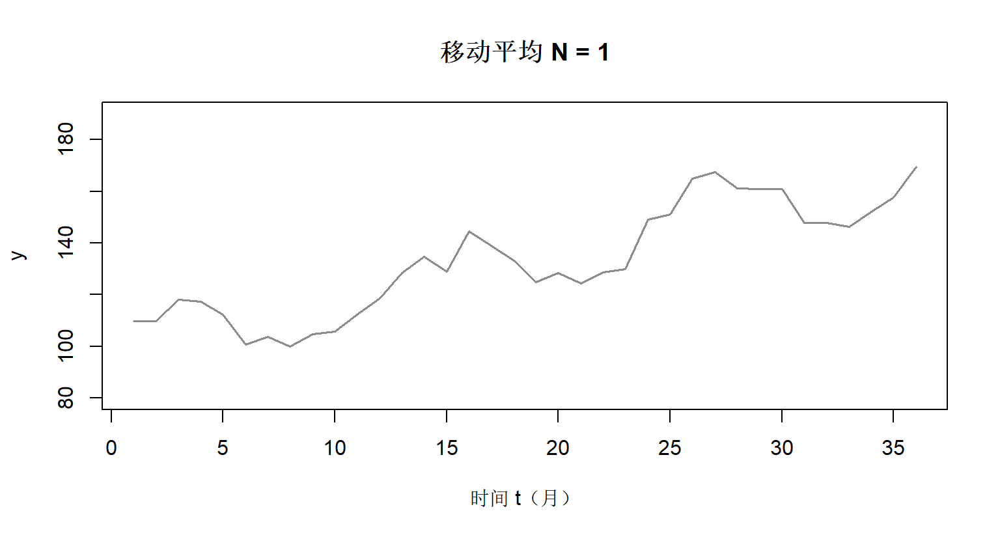
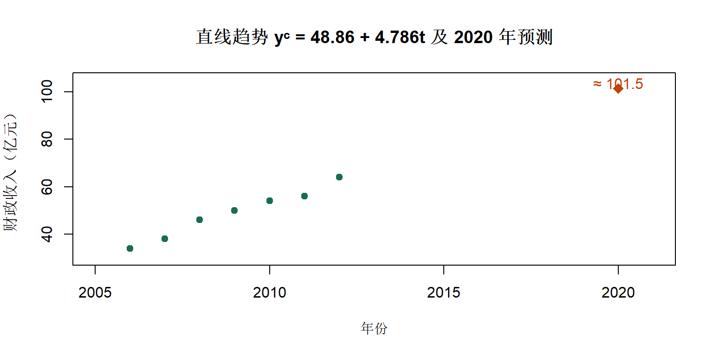
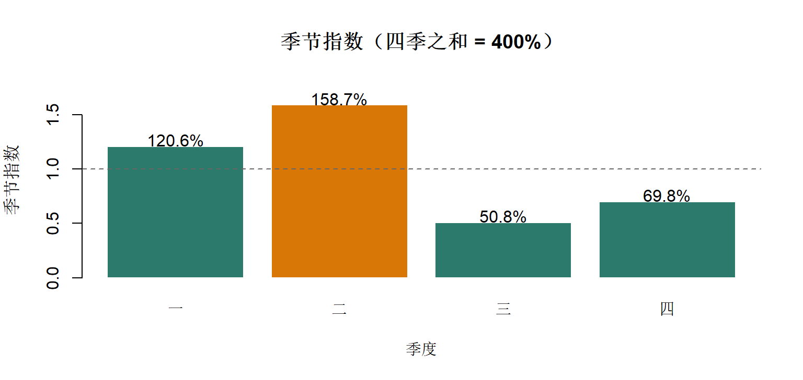
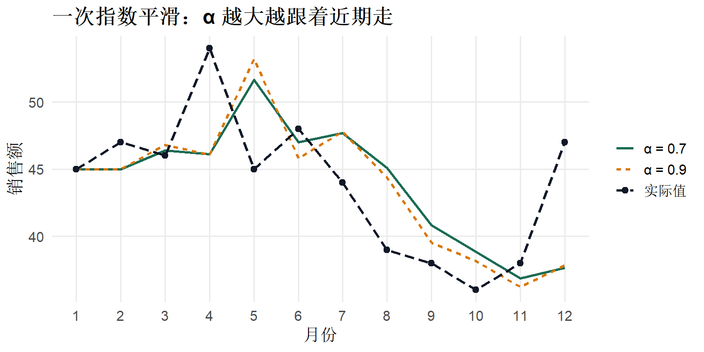

第八章 时间数列分析
《统计学原理》R 语言交互课件
# 《统计学原理》R 课件 · 公共配置 # 每个章节 qmd 通过 ```{r, file="_setup.R"} 方式引入 :: opts_chunk$ set (comment = "#>" ,collapse = TRUE ,out.width = "88%" ,fig.align = "center" ,fig.width = 8 ,fig.height = 5 ,fig.retina = 2 ,dev.args = list (family = "sans" )# 中文友好的 ggplot 主题 if (requireNamespace ("ggplot2" , quietly = TRUE )) {:: theme_set (:: theme_minimal (base_size = 14 ) + :: theme (plot.title = ggplot2:: element_text (face = "bold" ),panel.grid.minor = ggplot2:: element_blank ()# 讲义用统一调色板 <- c ("#1a6b54" , "#d97706" , "#2563eb" , "#c2410c" , "#7c3aed" , "#0891b2" )
第一节 时间数列概述
本节先给出时间数列的概念、构成要素与作用，再按指标形式与数据形态对时间数列进行分类，重点辨析时期序列与时点序列的特点，最后说明编制时间数列应遵循的可比性原则。
一、时间数列的概念与作用（续）
从该数列可以看出，山东省GDP、人均GDP和农民人均纯收入在2010—2015年间均逐年增长，体现了时间数列描述历史状况、揭示发展变化规律的作用。
二、时间数列的种类
1、按指标形式分
时间数列按其所编排指标的表现形式，可分为三类：
绝对数数列（总量指标数列） ：进一步细分为
相对数数列（相对指标数列） ；平均数数列（平均指标数列） 。
2、按观察数据性质与形态分
“图形先行”练习：先画图、再判断、后计算
面对一份新的时间数列，专业的第一步不是急着套公式，而是先画时序图、判断形态，再决定计算什么指标、选择什么方法。下表给出 2000—2013 年我国四个宏观年度序列（前 6 年数据摘录，完整序列为 14 年），请先目视判读其形态，再为每个序列选择合适的”下一步动作”：
二、时间数列的种类（续）
啤酒产量（万千升）
2231.3、2288.9、2402.7、2540.5、2948.6、3126.1
趋势型：持续上升
拟合趋势方程；计算平均发展速度
人均 GDP（元）
7857.7、8621.7、9398.1、10542.0、12335.6、14185.4
趋势型：持续快速上升
同上；增长快者可考察逐期增长速度
煤炭占能源消费总量比重（%）
69.2、68.3、68.0、69.8、69.5、70.8
在 68%~71% 高位起伏，未呈单向趋势
计算平均比重；移动平均修匀观察变化，不宜直接趋势外推
居民消费价格指数 CPI（上年=100）
100.4、100.7、99.2、101.2、103.9、101.8
围绕 100 上下波动（平稳型）
计算平均数与变异指标，不拟合趋势
判读要领：①年度数据不体现季节变动（见第四节），季度与月度数据才需考虑季节型；②趋势型序列先描述趋势再谈其他，平稳型序列重在刻画平均水平与波动；③作图遵循第三章”合理使用图表”清单（线图横纵比约 10:7、纵轴一般从 0 起、单色系等）。
三、总量指标时间序列：时期序列与时点序列（续）
总人口（万人）
9637
9685
9733
9798
9847
GDP（亿元）
45361
50013
55230
59427
63002
表中”总人口”属于典型的时点序列——它反映每年年末这一时点上山东省人口所达到的水平；而 GDP 是时期序列的例子，对比有助于理解两类序列的区别。
四、相对指标时间序列与平均指标时间序列
（二）相对指标时间序列
A、种类 ：计划完成、结构、比例、比较、强度、动态六种。
B、各期指标数值不可直接相加。
例：某地积累率及职工年平均工资资料
积累率%
23.76
26.39
24.21
27.81
22.89
平均工资（元）
3200
3450
4010
4280
4925
积累率是指积累基金在社会净产值使用额中所占的比重。
（三）平均指标时间序列
各期指标数值不可直接相加。
第二节 时间数列的水平分析
本节在发展水平概念的基础上，依次讲授平均发展水平（序时平均数）在各种数列条件下的计算方法——时期数列、时点数列（连续与间断、间隔相等与不等）以及相对指标与平均指标时间数列，最后介绍增长量与平均增长量，并对动态水平指标作系统小结。
一、发展水平
1、定义 ：各期的指标数值 \(a_t\) ，又称发展量，说明现象在某一时间上所达到的水平。
2、种类
（1）按计算方法区分：报告期水平、基期水平。
在对两个时间的发展水平对比时，作为对比基础时期的水平为基期水平 ，作为研究时期的发展水平为报告期水平 。
例 ：分析2009-2016年某地区生产总值的发展变化水平，2009年110.4亿元为基期水平，2016年199.1亿元为报告期水平。
（2）按在数列中所处的位置区分：最初水平 、中间水平 \(a_i\) 与最末水平 \(a_n\) 。
GDP
21617.8
26638.1
34634.4
46622.3
58260.5
编号一
\(a_0\) \(a_1\) \(a_2\) \(a_3\) \(a_4\)
编号二
\(a_1\) \(a_2\) \(a_3\) \(a_4\) \(a_5\)
一、发展水平（续）
说明：表中给出两种编号方式。若从 0 开始编号，则 2011 年 GDP 为最初水平 \(a_0\) ，2015 年为最末水平 \(a_4\) ；若从 1 开始编号，则最初水平为 \(a_1\) ，最末水平为 \(a_5\) 。可见最初水平、最末水平的确定与编号约定有关，中间各项即为中间水平 \(a_i\) 。
二、平均发展水平（序时平均数、动态平均数）
1、定义与算例
平均发展水平即现象在时间上的平均数，反映现象在一段时期的一般水平。
例 ：求我国 2011~2015 年的平均 GDP。
GDP（亿元）\(a\)
21617.8（\(a_1\) ）
26638.1（\(a_2\) ）
34634.4（\(a_3\) ）
46622.3（\(a_4\) ）
58260.5（\(a_5\) ）
各年 GDP 为时期数列，采用简单算术平均法：
\[\bar{a} = \frac{21617.8 + 26638.1 + 34634.4 + 46622.3 + 58260.5}{1+1+1+1+1} = \frac{187773.1\ \text{亿元}}{5\ \text{年}} = 37554.62\ \text{亿元/年}\]
即我国 2011~2015 年的平均 GDP 为 37554.62 亿元/年。
2、序时平均数与静态平均数的关系
（1）联系：二者均为平均数。
（2）区别：资料依据不同——静态平均数依据变量数列 计算，序时平均数依据时间数列 计算。
对比例证
静态平均数——2015年10人年龄资料：
二、平均发展水平（序时平均数、动态平均数）（续）
按加权算术平均计算：
\[\bar{x} = \frac{\sum xf}{\sum f} = 17\ \text{岁/人}\]
序时平均数——对时间数列求平均（如 2011~2015 年 GDP 时间数列）：
\[\bar{a} = \frac{187773.1}{5} = 37554.62\ \text{亿元/年}\]
通过对比可见：二者都是平均数，但静态平均数从变量数列（标志值及次数）出发，序时平均数从时间数列（不同时间的指标值）出发。
三、由时期数列计算序时平均数
1、时期数列序时平均数的计算
（1）各指标的时间长短一致：采用简单算术平均法，将各期指标值相加后除以期数 \(n\) ：
\[\bar{a} = \frac{\sum a_i}{n}\]
（2）各指标的时间长短不一致：需以各指标所属的时间长度 \(f_i\) 为权数，采用加权算术平均法：
\[\bar{a} = \frac{\sum a_i f_i}{\sum f_i}\]
时期数列中各指标值可以相加，故可直接对指标值求平均；当时期长度不等时，必须用时间长度加权，否则会高估或低估平均水平。
例：某厂各年钢产量——各年平均钢产量的计算
表中 2009 年一栏标注”（2009-2011）“，说明该栏数据涉及三年时间长度：55 吨按单年口径理解，括号内 150 吨为该三年口径的数值。
方法一：各指标时间长短一致——简单算术平均：
\[\bar{a} = \frac{a_1 + a_2 + a_3 + \cdots + a_n}{n} = \frac{55 + 58 + 64 + 69}{4} = 61.5\ \text{吨}\]
三、由时期数列计算序时平均数（续）
方法二：各指标时间长短不一致——加权算术平均（2009-2011 三年按合计 150 吨、时间长度 3 年计，总时间长度为 \(3+1+1+1=6\) 年）：
\[\bar{a} = \frac{a_1 f_1 + a_2 f_2 + a_3 f_3 + \cdots + a_n f_n}{\sum f_i} = \frac{150 + 58 + 64 + 69}{6} = 56.8\ \text{吨}\]
当各指标所属时间长短不一致时，必须以时间长度 \(f_i\) 加权，分母取总时间长度，计算结果才能真实反映平均水平。
四、由时点数列计算序时平均数
时点数列序时平均数的计算方法取决于时点序列的类型。时点序列按资料的连续性与间隔情况分为四种情形：
时点序列
├── 连续时点序列
│ ├── 间隔相等
│ └── 间隔不等
└── 间断时点序列
├── 间隔相等
└── 间隔不等即”连续/间断”与”间隔相等/间隔不等”两两组合，共四种类型，下面分别给出各类型相应的序时平均数计算公式与例题。
（图示说明：本页以树形结构图展示时点序列按”连续/间断”与”间隔相等/不等”组合划分的四种类型，为后续分类讲授序时平均数计算方法建立逻辑框架。）
（1）间隔相等的连续时点数列——简单算术平均法
对于逐日记录的时点数列，视其为连续。设时点数列各期水平为 \(a_1, a_2, \cdots, a_n\) ，由于间隔相等且视为连续，可直接采用简单算术平均法：
\[\bar{a} = \frac{a_1 + a_2 + \cdots + a_n}{n} = \frac{\sum_{i=1}^{n} a_i}{n}\]
例：间隔相等的连续时点数列——求平均库存量
某厂成品仓库有关资料如下（逐日登记库存量）：
四、由时点数列计算序时平均数（续）
库存量（台）\(a\)
38（\(a_1\) ）
42（\(a_2\) ）
39（\(a_3\) ）
37（\(a_4\) ）
41（\(a_5\) ）
试求该仓库 5 天的平均库存量。各时点间隔均为 1 日（\(f=1\) ），按连续时点数列计算：
\[\bar{a} = \frac{38 \times 1 + 42 \times 1 + 39 \times 1 + 37 \times 1 + 41 \times 1}{1+1+1+1+1} = \frac{197\ \text{台日}}{5\ \text{日}} = 39.4\ (\text{台})\]
即间隔相等的连续时点数列，序时平均数等于各时点指标值之和除以时点个数（\(\bar{a} = \frac{\sum a}{n}\) ）。
（2）间隔不等的连续时点数列——加权算术平均法
对于应该逐日记录的时点数列，每变动一次才登记一次，即各时点水平持续的时间（间隔）不等。此时不能简单平均，应以各时点水平所持续的间隔长度为权数，采用加权算术平均法：
四、由时点数列计算序时平均数（续）
\[\bar{a} = \frac{a_1 f_1 + a_2 f_2 + \cdots + a_n f_n}{f_1 + f_2 + \cdots + f_n} = \frac{\sum_{i=1}^{n} a_i f_i}{\sum_{i=1}^{n} f_i}\]
其中：\(a_i\) 为各时点的指标数值，\(f_i\) 为各时点数值持续的间隔长度（权数）。
例一：某厂成品仓库有关资料如下（库存量每变动一次登记一次）
库存量（台）\(a\)
38（\(a_1\) ）
42（\(a_2\) ）
39（\(a_3\) ）
37（\(a_4\) ）
41（\(a_5\) ）
试求该仓库本月（30 天）的平均库存量。各库存量持续的天数不同（分别为 9、2、8、5、6 天），属于间隔不等的连续时点数列，应以持续天数为权数，采用加权算术平均法：
\[\bar{a} = \frac{38 \times 9 + 42 \times 2 + 39 \times 8 + 37 \times 5 + 41 \times 6}{9 + 2 + 8 + 5 + 6}\]
即：分子为各期库存量与其持续天数乘积之和（台日总数），分母为各期持续天数之和（总天数 30 天）。
例二：某厂成品仓库库存变动时登记如下
四、由时点数列计算序时平均数（续）
库存量（台）
38（\(a_1\) ）
42（\(a_2\) ）
39（\(a_3\) ）
37（\(a_4\) ）
41（\(a_5\) ）
试求该仓库该月的平均库存量。库存量每变动一次才登记一次，各时点数值持续的天数（间隔）不等，故列出权数表：
38
5
42
4
39
15
37
6
41
1
合计
31
各库存量持续天数之和 \(\sum f = 31\) ，恰为该月总天数，库存量在两次登记之间保持不变。计算过程：
\[\bar{a} = \frac{38 \times 5 + 42 \times 4 + 39 \times 15 + 37 \times 6 + 41 \times 1}{5 + 4 + 15 + 6 + 1} = \frac{1206}{31} = 38.90\ (\text{台})\]
即 \(\bar{a} = \frac{\sum af}{\sum f}\) ：间隔不等的连续时点数列，以各数值持续的间隔（天数）为权数做加权算术平均，权数之和等于全月天数，结果即全月日平均库存量。
（3）间隔相等的间断时点数列——首末折半法
四、由时点数列计算序时平均数（续）
特点：不是逐日记录，而是每隔一段时间登记一次，表现为期初或期末值。
以季度时点数列为例，设各时点数值为 \(a_1, a_2, a_3, a_4, a_5\) （分别为一季度初、二季度初、三季度初、四季度初、次年一季度初）。
第一步：先求相邻两时点间的平均水平（假定两时点之间均匀变动）：
\[\frac{a_1+a_2}{2},\quad \frac{a_2+a_3}{2},\quad \frac{a_3+a_4}{2},\quad \frac{a_4+a_5}{2}\]
第二步：对各间隔的平均水平再作简单平均（共 4 个间隔）：
\[\frac{\dfrac{a_1+a_2}{2}+\dfrac{a_2+a_3}{2}+\dfrac{a_3+a_4}{2}+\dfrac{a_4+a_5}{2}}{4} = \frac{\dfrac{a_1}{2}+a_2+a_3+a_4+\dfrac{a_5}{2}}{5-1}\]
一般公式（首末折半法）：
\[\bar{a}=\frac{\dfrac{a_1}{2}+a_2+a_3+\cdots+\dfrac{a_n}{2}}{n-1}\]
中间各项权数为 1，首末两项权数为 \(\tfrac{1}{2}\) ，分母为时点项数减 1，即间隔个数。
（图示说明：示意图以时间轴展示五个季度初时点 \(a_1\) —\(a_5\) 及相邻两时点的平均值，直观说明”首末折半法”公式的推导思路。）
四、由时点数列计算序时平均数（续）
例：间隔相等的间断时点数列——求第一季度平均库存量
某厂成品仓库各月初库存量资料如下，试求某厂成品仓库第一季度的平均库存量：
库存量（台）
38（\(a_1\) ）
42（\(a_2\) ）
39（\(a_3\) ）
37（\(a_4\) ）
解：先将各月月初、月末库存量平均得各月平均库存，再对三个月平均（间隔 \(f\) 均为 1 个月）：
\[\bar{a} = \frac{\dfrac{38+42}{2} \times 1 + \dfrac{42+39}{2} \times 1 + \dfrac{39+37}{2} \times 1}{1+1+1} = \frac{\dfrac{a_1+a_2}{2}+\dfrac{a_2+a_3}{2}+\dfrac{a_3+a_4}{2}}{3} = \frac{\dfrac{1}{2}a_1 + a_2 + a_3 + \dfrac{1}{2}a_4}{4-1} = 39.5\ (\text{台})\]
本例也可归结为加权算术平均形式 \(\bar{x} = \dfrac{\sum xf}{\sum f}\) ：
四、由时点数列计算序时平均数（续）
1/1—31/1
38—42
1
1/2—28/2
42—39
1
1/3—31/3
39—37
1
合计
——
3
首尾折半法 ：首项与末项各折半，中间各项全加，除以 \(n-1\) 。其中 \(n\) → 指标值个数，\(n-1\) → 时间长度。
（4）间隔不等的间断时点数列——加权序时平均
当掌握的间断时点资料间隔不相等时，时间轴上依次为四个时点：\(a_1\) （一季度初）、\(a_2\) （二季度初）、\(a_3\) （三季度初）、\(a_4\) （次年一季度初），相邻时点的间隔依次为 90 天、90 天、180 天。
第一步：先求相邻两时点间的平均水平（假定两时点之间均匀变动）：
\[\frac{a_1+a_2}{2},\quad \frac{a_2+a_3}{2},\quad \frac{a_3+a_4}{2}\]
第二步：以各间隔的时间长度 \(f_i\) 为权数加权平均（\(f_1=90\) 天、\(f_2=90\) 天、\(f_3=180\) 天，权数之比为 \(1:1:2\) ），得全期平均发展水平：
四、由时点数列计算序时平均数（续）
\[\bar{a} = \frac{\dfrac{a_1+a_2}{2} \times f_1 + \dfrac{a_2+a_3}{2} \times f_2 + \dfrac{a_3+a_4}{2} \times f_3}{f_1 + f_2 + f_3}\]
即：间隔不等的间断时点资料，先对相邻两时点值简单平均，再以间隔长度加权平均。
（图示说明：时间轴示意图标出四个时点 \(a_1\) 、\(a_2\) 、\(a_3\) 、\(a_4\) 及相邻间隔（90天、90天、180天），直观说明加权公式中权数（间隔长度）的来源。）
一般公式：时点指标各时点之间间隔不相等时，以相邻两个时点之间的间隔 \(f\) 为权数，采用加权平均。如果时点指标为 \(n\) 项，计算公式用符号表示如下：
\[\bar{a} = \frac{\dfrac{a_1+a_2}{2}f_1 + \dfrac{a_2+a_3}{2}f_2 + \cdots + \dfrac{a_{n-1}+a_n}{2}f_{n-1}}{f_1 + f_2 + \cdots + f_{n-1}}\]
统一写法：
\[\bar{a} = \frac{\sum\dfrac{1}{2}\left(a_i + a_{i+1}\right)f_i}{\sum f_i} \qquad i=1,2,\cdots,n-1\]
四、由时点数列计算序时平均数（续）
其中：\(a\) 为各时点指标；\(f\) 为相邻两个时点之间的间隔。即先用相邻两时点值的平均数 \(\frac{1}{2}(a_i+a_{i+1})\) 代表该间隔内的发展水平，再以间隔长度 \(f_i\) 加权平均。
例：求该厂成品仓库当年平均库存量（间隔不等的间断时点数列）
库存量（台）
38（\(a_1\) ）
42（\(a_2\) ）
39（\(a_3\) ）
37（\(a_4\) ）
41（\(a_5\) ）
解：列出各时段与间隔：
1/1—31/3
38—42
3
1/4—30/6
42—39
3
1/7—31/10
39—37
4
1/11—31/12
37—41
2
合计
——
12
各段间隔之和 \(3+3+4+2=12\) 个月，即全年。计算过程（加权序时平均）：
四、由时点数列计算序时平均数（续）
\[\bar{a} = \frac{\sum \frac{1}{2}(a_i + a_{i+1}) f_i}{\sum f} = \frac{\frac{1}{2}(38+42) \times 3 + \frac{1}{2}(42+39) \times 3 + \frac{1}{2}(39+37) \times 4 + \frac{1}{2}(37+41) \times 2}{12} = 39.29\ \text{台}\]
即先用相邻两时点数值的简单平均作为各时段的代表值，再以间隔长度 \(f_i\) 为权数加权平均。
五、由相对指标或平均指标时间数列计算序时平均数
基本公式 ：若时间数列 \(c_i = \dfrac{a_i}{b_i}\) ，则其序时平均数为：
\[\bar{c} = \frac{\bar{a}}{\bar{b}}\]
其中 \(\bar{a}\) 为指标分子 的序时平均数，\(\bar{b}\) 为指标分母 的序时平均数。
相对指标或平均指标时间数列各期 \(c_i\) 不具有可直接相加的性质，不能对其作简单算术平均。正确做法是：先分别对分子数列 \(a_i\) 和分母数列 \(b_i\) 计算各自的序时平均数 \(\bar{a}\) 与 \(\bar{b}\) ，再相除得到 \(\bar{c}\) ；分子、分母的序时平均数应根据其所属数列是时期数列还是时点数列，选用相应的计算方法。
情形1：\(a\) 、\(b\) 均为时期数列
当构成相对指标 \(c = \dfrac{a}{b}\) 的分子 \(a\) 与分母 \(b\) 均为时期数列时，由于时期数列各期指标值可以直接相加，序时平均数为：
\[\bar{c} = \frac{\bar{a}}{\bar{b}} = \frac{\dfrac{\sum a}{N}}{\dfrac{\sum b}{N}} = \frac{\sum a}{\sum b}\]
其中 \(N\) 为时期项数。计算时先分别对分子、分母求简单算术平均，再相除即得相对指标的序时平均数。
例一：求某厂第二季度平均的计划完成程度
某厂第二季度有关资料如下：
五、由相对指标或平均指标时间数列计算序时平均数（续）
实际产值（\(a\) ）
100
120
125
计划产值（\(b\) ）
90
100
100
计%（\(c\) ）
111
120
125
错误解法（×）——对各月计划完成百分比简单平均：
\[\bar{c} = \frac{111\% + 120\% + 125\%}{3} = 118.67\%\quad (\times)\]
注意：由相对指标时间数列求序时平均数，不能直接对相对数简单算术平均。
正确解法：由 \(c = a/b\) ，得
\[\bar{c} = \frac{\bar{a}}{\bar{b}} = \frac{\sum a}{n} \Big/ \frac{\sum b}{n} = \frac{\text{第二季度平均的实际产值}}{\text{第二季度平均的计划产值}}\]
其中 \(\bar{a} = \dfrac{100+120+125}{3} = 115\) ，\(\bar{b} = \dfrac{90+100+100}{3} = 96.67\) ，故：
\[\bar{c} = \frac{115}{96.67} = 118.96\%\]
即该厂第二季度平均计划完成程度为 118.96%。
例二：某化工厂一季度利润计划平均完成程度
某化工厂某年一季度利润计划完成情况如下：
五、由相对指标或平均指标时间数列计算序时平均数（续）
计划利润（万元）
200
300
400
利润计划完成程度（%）
125
120
150
因为利润计划完成程度 \(c = \dfrac{\text{实际利润}(a)}{\text{计划利润}(b)}\) ，所以该厂一季度的计划平均完成程度为：
\[\bar{c} = \frac{\bar{a}}{\bar{b}} = \frac{1.25 \times 200 + 1.2 \times 300 + 1.5 \times 400}{200+300+400} = \frac{250+360+600}{900} = 134.4\%\]
由相对数时间数列计算序时平均数时，不能对各期完成程度简单平均，而应先分别求出分子（实际利润 \(a=c\times b\) ）与分母（计划利润）的序时平均数，再对比求得平均计划完成程度。
情形2：\(a\) 、\(b\) 均为时点数列（以间隔相等的间断时点数列为例）
当分子 \(a\) 与分母 \(b\) 均为间隔相等的间断时点数列时，先用首末折半法分别求分子数列与分母数列的序时平均数，再相除：
五、由相对指标或平均指标时间数列计算序时平均数（续）
\[\bar{c} = \frac{\bar{a}}{\bar{b}} = \frac{\dfrac{\dfrac{a_1}{2} + a_2 + \cdots + a_{N-1} + \dfrac{a_N}{2}}{N-1}}{\dfrac{\dfrac{b_1}{2} + b_2 + \cdots + b_{N-1} + \dfrac{b_N}{2}}{N-1}} = \frac{\dfrac{a_1}{2} + a_2 + \cdots + \dfrac{a_N}{2}}{\dfrac{b_1}{2} + b_2 + \cdots + \dfrac{b_N}{2}}\]
即分子、分母均按”首末折半法”计算序时平均数（首末两项各取一半，中间各项全加，除以 \(N-1\) ），两处的 \(N-1\) 相除时可约去。
例一：求第二季度生产工人数占全部工人人数的平均比重
某企业第二季度职工人数资料如下：
生产工人数 \(a\)
534
553
547
602
全部工人数 \(b\)
680
650
675
730
比重（%）\(c\)
79
85
81
82
五、由相对指标或平均指标时间数列计算序时平均数（续）
本例资料为间隔相等的间断的时点数列 ，故先用”首末折半法”分别求分子、分母的序时平均数，再对比求平均比重 \(\bar{c} = \bar{a}/\bar{b}\) 。列出各月间隔：
1/4—30/4
534—553
1
1/5—31/5
553—547
1
1/6—30/6
547—602
1
合计
——
3
生产工人数的序时平均数：
\[\bar{a} = \frac{\dfrac{534}{2} + 553 + 547 + \dfrac{602}{2}}{4-1} = 556\]
全部工人数的序时平均数：
\[\bar{b} = \frac{\dfrac{680}{2} + 650 + 675 + \dfrac{730}{2}}{4-1} = 676.67\]
平均比重：
\[\bar{c} = \frac{\bar{a}}{\bar{b}} = \frac{556}{676.67} = 82.17\%\]
即第二季度生产工人数占全部工人人数的平均比重为 82.17%。
例二：求某车间 4 月份平均工人出勤率
某车间今年 4 月份生产工人出勤情况如下：
五、由相对指标或平均指标时间数列计算序时平均数（续）
1—8
45
43
21—25
46
44
9—11
43
40
26—29
49
48
12—20
48
45
30
49
47
出勤率是相对数 \(c = \dfrac{\text{实际出勤}(a)}{\text{应出勤}(b)}\) ，求月平均出勤率不能对各时段比率简单平均，而应先以天数 \(f\) 为权数分别求分子、分母的加权序时平均数，再对比。
实际出勤的平均数（以天数 \(f\) 为权数）：
\[\bar{a} = \frac{\sum af}{\sum f} = 44.27\]
应出勤的平均数：
\[\bar{b} = \frac{\sum af}{\sum f} = 46.53\]
则平均工人出勤率：
\[\bar{c} = \frac{\bar{a}}{\bar{b}} = \frac{44.27}{46.53} = 95.14\%\]
即该车间 4 月份平均工人出勤率为 95.14%。
情形3：\(a\) 、\(b\) 为不同性质的数列
【例】已知某企业的下列资料：
五、由相对指标或平均指标时间数列计算序时平均数（续）
工业增加值（万元）\(a\)
11.0
12.6
14.6
16.3
18.0
月末全员人数（人）\(b\)
2000
2000
2200
2200
2300
其中工业增加值 \(a\) 为时期数列，月末全员人数 \(b\) 为时点数列，两者性质不同，计算序时平均数时须分别处理。
要求计算：① 该企业第二季度各月的劳动生产率；② 该企业第二季度的月平均劳动生产率；③ 该企业第二季度的劳动生产率。
解① 第二季度各月的劳动生产率
工业增加值是时期数列，直接取当月数值；月末全员人数是时点数列，须用相邻两月末人数的简单平均求出当月平均人数，两者对比即得各月劳动生产率 \(c=a/b\) 。
四月份：
\[c_1=\frac{12.6\times 10000}{(2000+2000)\div 2}=6300\text{（元}/\text{人）}\]
五月份：
\[c_2=\frac{14.6\times 10000}{(2000+2200)\div 2}=6952.4\text{（元}/\text{人）}\]
六月份：
\[c_3=\frac{16.3\times 10000}{(2200+2200)\div 2}=7409.1\text{（元}/\text{人）}\]
时期数列的分子可直接相加或直接取值，时点数列的分母要用首末折半法求平均，二者性质不同须分别处理。
五、由相对指标或平均指标时间数列计算序时平均数（续）
解② 该企业第二季度的月平均劳动生产率
劳动生产率是相对数时间数列，其序时平均数不能直接平均各期比率，应分别计算分子、分母的序时平均数后再对比。分子 \(a\) （工业增加值）是时期数列，按时期数列简单平均；分母 \(b\) （月末人数）是间隔相等的时点数列，按首末折半法平均：
\[\bar{c}=\frac{\bar{a}}{\bar{b}}=\frac{10000\times(12.6+14.6+16.3)\div 3}{\left(\dfrac{2000}{2}+2000+2200+\dfrac{2200}{2}\right)\div(4-1)}=6904.76\text{（元}/\text{人）}\]
分子取第二季度（四、五、六月）工业增加值之和除以 3，单位由万元换算为元故乘以 10000；
分母为时点数列，采用首末折半法：三月末与六月末人数折半，中间各月末人数直接相加后除以项数减一（\(4-1=3\) ）；
二者对比即得第二季度月平均劳动生产率 6904.76 元/人。
解③ 该企业第二季度的劳动生产率
分子取第二季度（四、五、六三个月）工业增加值合计（万元换算为元）：
\[\sum a=(12.6+14.6+16.3)\times 10000\]
分母为间隔相等时点数列（月末人数）的序时平均数（首末折半法）：
\[\bar{b}=\frac{\dfrac{2000}{2}+2000+2200+\dfrac{2200}{2}}{4-1}\]
五、由相对指标或平均指标时间数列计算序时平均数（续）
则第二季度劳动生产率（\(C=\dfrac{\sum a}{\bar{b}}=\bar{c}\cdot N\) 的形式）：
\[C=\frac{\sum a}{\bar{b}}=\frac{(12.6+14.6+16.3)\times 10000}{\left(\dfrac{2000}{2}+2000+2200+\dfrac{2200}{2}\right)\div(4-1)}=20714.28\text{（元}/\text{人）}\]
由时期数列与时点数列对比构成的相对指标时间数列，求整个时期的总量指标（季度劳动生产率）时，分子直接用时期数列合计，分母用时点数列序时平均数，也可由月平均劳动生产率乘以月数 \(N\) 得到。
六、增长量与平均增长量
（一）增长水平（增长量）
1、定义 ：增长水平 = 报告期水平 − 基期水平。例如 \(q_{98}=50\) ，\(q_{99}=55\) ，则 \(q_{99}-q_{98}=5\) 。
2、种类 ：
(1) 逐期增长量 = 报告期水平 − 前期水平，即 \(a_i - a_{i-1}\) ；(2) 累积增长量 = 报告期水平 − 固定基期水平，即 \(a_i - a_0\) 。
例：逐期增长量与累积增长量计算表
产值（万元）
100（\(a_0\) ）
120（\(a_1\) ）
118（\(a_2\) ）
125（\(a_3\) ）
逐期增长量
——
120−100=20（\(a_1-a_0\) ）
118−120=−2（\(a_2-a_1\) ）
125−118=7（\(a_3-a_2\) ）
累积增长量
100−100=0（\(a_0-a_0\) ）
120−100=20（\(a_1-a_0\) ）
118−100=18（\(a_2-a_0\) ）
125−100=25（\(a_3-a_0\) ）
逐期增长量以报告期的前一期为基期，累积增长量以某一固定基期（本例 2015 年 \(a_0=100\) ）为基期；逐期增长量可能出现负数（如 2017 年为 −2），说明该年产值比上年下降。
六、增长量与平均增长量（续）
3、数量关系
（1）逐期增长水平之和 = 累积增长水平：
\[(a_1-a_0)+(a_2-a_1)+\cdots+(a_{n-1}-a_{n-2})+(a_n-a_{n-1})=a_n-a_0\]
相邻各项的中间水平相互抵消，故各逐期增长量之和恰等于最末期的累积增长量。以上页资料验证：
\[(a_1-a_0)+(a_2-a_1)=20+(-2)=18=a_2-a_0\]
（2）年距增长量：
\[\text{年距增长量}=\text{报告期水平}-\text{上年同期水平}\]
计算年距增长量可以消除季节变动的影响，便于观察现象的发展趋势。
（二）平均增长量（水平法）
1、定义 ：观察期内各逐期增长量的平均数，或现象在一定时期内平均每期增长的绝对量。
2、计算示例
产值（万元）
100（\(a_0\) ）
120（\(a_1\) ）
118（\(a_2\) ）
125（\(a_3\) ）
逐期增长水平
——
20（\(a_1-a_0\) ）
−2（\(a_2-a_1\) ）
7（\(a_3-a_2\) ）
累积增长水平
0（\(a_0-a_0\) ）
20（\(a_1-a_0\) ）
18（\(a_2-a_0\) ）
25（\(a_3-a_0\) ）
六、增长量与平均增长量（续）
\[\text{平均增长量}=\frac{(a_1-a_0)+(a_2-a_1)+(a_3-a_2)}{1+1+1}=\frac{20+(-2)+7}{3}=\frac{25}{3}=8.33\text{（}\text{万元/年}\text{）}\]
即：
\[\text{平均增长量}=\frac{\text{逐期增长量之和}}{\text{逐期增长量个数}}=\frac{\text{累积增长量}}{\text{观察值个数}-1}=\frac{a_3-a_0}{3}\]
一般公式：
\[\text{平均增长量}=\frac{a_n-a_0}{n}=\frac{(a_1-a_0)+(a_2-a_1)+\cdots+(a_n-a_{n-1})}{n}\]
本节小结：常用的动态水平指标
1·序时平均数（平均发展水平指标）
时期总量指标数列；按日连续登记的时点指标数列
\(\bar{a}=\dfrac{\sum a}{n}\) 适用于时期总量指标和按日连续登记的时点指标数列。
不连续登记、间隔相等的时点指标数列
\(\bar{a}=\dfrac{\dfrac{a_1}{2}+a_2+\cdots+a_{n-1}+\dfrac{a_n}{2}}{n-1}\) 首末折半法，适用于不连续登记、间隔相等的时点指标数列。
不连续登记、间隔不相等的时点指标数列
\(\bar{a}=\dfrac{\dfrac{a_1+a_2}{2}f_1+\dfrac{a_2+a_3}{2}f_2+\cdots+\dfrac{a_{n-1}+a_n}{2}f_{n-1}}{f_1+f_2+\cdots+f_{n-1}}\) 以间隔长度 \(f\) 为权数加权平均，适用于不连续登记、间隔不相等的时点指标数列。
相对指标或平均指标时间数列
\(\bar{c}=\dfrac{\bar{a}}{\bar{b}}\) 分子 \(a\) 和分母 \(b\) 按各自数列的指标形式，参照上述方法求序时平均数。
本节小结：常用的动态水平指标（续）
计算序时平均数时，首先判断数列是时期数列还是时点数列；时点数列还要区分登记是否连续、间隔是否相等，再选择相应公式；对由两个数列对比形成的相对数或平均数数列，应分别求分子、分母的序时平均数后再相除。
2·增长量
按对比基期不同分为两种：
逐期增长量 ：报告期水平与前一期水平之差，\(\Delta a=a_t-a_{t-1}\) ；累计增长量 ：报告期水平与固定基期水平（最初水平 \(a_0\) ）之差，\(\Delta a=a_n-a_0\) 。
3·平均增长量
按水平法计算：
\[\bar{\Delta a}=\frac{a_n-a_0}{n}\]
水平法适用于多期增长量平稳变化的数列。
第三节 时间数列的速度分析
本节在水平指标的基础上转入速度指标：先讲发展速度与增长速度（环比与定基）及其数量关系、增长 1% 的绝对值，再重点讲授平均发展速度的两种计算方法——水平法（几何平均法）与高次方程法（累计法）及其应用，最后通过课堂作业巩固动态分析指标的综合运用。
一、发展速度
1、定义 ：发展速度 = 报告期水平 ÷ 基期水平。
引例：设 \(q_{98}=50\) ，\(q_{99}=55\) ，则 \(q_{99}-q_{98}=5\) 为增长量，\(q_{99}/q_{98}=110\%\) 即发展速度。
2、两种发展速度
(1) 环比发展速度 = 报告期水平 ÷ 前期水平，即 \(a_i/a_{i-1}\) ；(2) 定基发展速度 = 报告期水平 ÷ 固定基期水平，即 \(a_i/a_0\) 。
例题演算
产值（万元）
100（\(a_0\) ）
120（\(a_1\) ）
118（\(a_2\) ）
125（\(a_3\) ）
环比发展速度〔以上年为 100〕
——
（\(a_1/a_0\) ）120%
（\(a_2/a_1\) ）98.33%
（\(a_3/a_2\) ）105.93%
定基发展速度〔以 96 年为 100〕
（\(a_0/a_0\) ）100%
（\(a_1/a_0\) ）120%
（\(a_2/a_0\) ）118%
（\(a_3/a_0\) ）125%
环比发展速度以报告期的前一期为基期，定基发展速度以某一固定基期（本例 1996 年）为基期，同一组数据两种算法的结果不同。
3、数量关系
一、发展速度（续）
（1）环比发展速度的连乘积 = 定基发展速度 ※
\[\frac{a_1}{a_0}\times\frac{a_2}{a_1}\times\cdots\times\frac{a_{n-1}}{a_{n-2}}\times\frac{a_n}{a_{n-1}}=\frac{a_n}{a_0}\]
以上页资料验证：
\[\frac{a_1}{a_0}\times\frac{a_2}{a_1}=\frac{a_2}{a_0}\ \Rightarrow\ 1.20\times 0.9833=1.18\]
（2）相邻的两个定基发展速度的商等于相应的环比发展速度：
\[\frac{a_i}{a_0}\div\frac{a_{i-1}}{a_0}=\frac{a_i}{a_{i-1}}\]
验证：
\[\frac{a_2}{a_0}\div\frac{a_1}{a_0}=\frac{a_2}{a_1}\ \Rightarrow\ 1.18\div 1.20=0.9833\]
例：某厂产值资料
一、发展速度（续）
产值（万元）
100（\(a_0\) ）
120（\(a_1\) ）
118（\(a_2\) ）
125（\(a_3\) ）
环比发展速度%
——
120（\(a_1/a_0\) ）
98.33（\(a_2/a_1\) ）
105.93（\(a_3/a_2\) ）
定基发展速度%
100（\(a_0/a_0\) ）
120（\(a_1/a_0\) ）
118（\(a_2/a_0\) ）
125（\(a_3/a_0\) ）
环比发展速度连乘（\(1.20\times 0.9833=1.18\) ）得定基发展速度；相邻定基发展速度相除（\(1.18\div 1.20=0.9833\) ）得环比发展速度。
二、增长速度（续）
环比发展速度 \(=\dfrac{a_i}{a_{i-1}}\) ，环比增长速度 = 环比发展速度 − 1（即 −100%）。
例 2：变量值出现负数时发展速度失真。
利润（万元）
100（\(a_0\) ）
-100（\(a_1\) ）
-200（\(a_2\) ）
100（\(a_3\) ）
环比发展速度%
——
-100
200
-50
当利润由 100 变为 -100、再变为 -200 时，计算出的环比发展速度（-100%、200%、-50%）无法正确反映现象实际变化的方向和程度。
结论：实际工作中，当变量值出现负数或零时，一般不计算发展速度。
三、增长 1% 的绝对值
引例
A 厂
100 万元
120 万元
+20%
20 万元
B 厂
1000 万元
1100 万元
+10%
100 万元
A 厂增速虽高，但每增长 1% 对应的增长量小；B 厂增速较低，每增长 1% 对应的增长量大。可见速度指标必须与绝对量指标结合使用。
公式推算（以 A 厂产值为例）
A 厂产值：100 万元（\(a_{i-1}\) ），120 万元（\(a_i\) ）。
由 20 万元 : 20% = \(x\) : 1%，一般化为增长量 : 增长速度 = \(x\) : 1%，即
\[(a_i-a_{i-1}):\frac{a_i-a_{i-1}}{a_{i-1}}=x:1\%\]
\[x=\frac{a_i-a_{i-1}}{a_{i-1}}\times 1\% = \frac{a_i-a_{i-1}}{100\,(a_i-a_{i-1})/a_{i-1}} = \frac{a_{i-1}}{100}=a_{i-1}\times 1\%\]
结论
\[\text{第 } i \text{ 期增长 1\% 的绝对值}=\frac{a_{i-1}}{100}\]
三、增长 1% 的绝对值（续）
即增长 1% 的绝对值等于前期发展水平除以 100（前期发展水平的百分之一）。
真实数据警示案例：中国钢产量——286% 的高增长率只对应每 1% 增长 0.16 万吨
增长 1% 的绝对值之警示作用，在中国钢产量三个时期的对比中体现得最为强烈。我国三个时期两个年份的钢产量及动态指标如下：
A
1949
15.8
—
—
—
—
A
1950
61
45.2
386.08
286.08
0.16
B
1978
3178
—
—
—
—
B
1979
3448
270
108.50
8.50
31.78
C
1986
5220
—
—
—
—
C
1987
5628
408
107.82
7.82
52.20
三、增长 1% 的绝对值（续）
以时期 A 为例验算：\(\Delta = 61 - 15.8 = 45.2\) 万吨；发展速度 \(= 61 \div 15.8 = 386.08\%\) ；增长率 \(= 45.2 \div 15.8 = 286.08\%\) ；增长 1% 的绝对值 \(= 15.8 \div 100 \approx 0.16\) 万吨。
对比时期 A 与 C：1950 年增长率高达 286.08%，但每增长 1% 只对应 0.16 万吨钢；1987 年增长率仅 7.82%，每增长 1% 却对应 52.20 万吨——是 1950 年的 326 倍。若只按增长率排座次，会得出”1950 年钢铁工业的发展远超 1987 年”的片面结论；把速度与增长 1% 的绝对值结合使用，才能完整评价不同基数下的发展。这与上文 A、B 两厂引例的道理相同，但同一现象跨 38 年的真实数据反差更为强烈。
四、平均发展速度与平均增长速度的概念
1、平均发展速度 ：各个时期的环比发展速度的平均数，说明现象在一段时期内平均发展变化的程度。
2、平均增长速度 ：说明现象在一段时间内平均增长变化的情况，等于平均发展速度减 1，即
\[\text{平均增长速度}=\text{平均发展速度}-1\]
五、平均发展速度的水平法（几何平均法）
推导过程
产值（万元）
100（\(a_0\) ）
120（\(a_1\) ）
118（\(a_2\) ）
125（\(a_3\) ）
环比发展速度% \(x\)
——
120（\(x_1=a_1/a_0\) ）
98.33（\(x_2=a_2/a_1\) ）
105.93（\(x_3=a_3/a_2\) ）
环比发展速度的连乘积等于定基发展速度：
\[120\%\times 98.33\%\times 105.93\%=125\%\]
\[\frac{a_1}{a_0}\times\frac{a_2}{a_1}\times\frac{a_3}{a_2}=\frac{a_3}{a_0}\ \Rightarrow\ a_0\cdot x_1\cdot x_2\cdot x_3=a_3\]
令 \(\bar{x}\) 为 \(x_1,x_2,x_3\) 的平均数，用 \(\bar{x}\) 代替各环比发展速度，要求结果不变：
\[a_0\cdot\bar{x}\cdot\bar{x}\cdot\bar{x}=a_3\ \Rightarrow\ \bar{x}=\sqrt[3]{\frac{a_3}{a_0}}=\sqrt[3]{\frac{125}{100}}=107.72\%\]
也可由各环比发展速度的几何平均求得：
五、平均发展速度的水平法（几何平均法）（续）
\[\bar{x}=\sqrt[3]{x_1\cdot x_2\cdot x_3}=\sqrt[3]{1.20\times 0.9833\times 1.0593}=107.72\%\]
注意 ：平均增长速度不能根据各期环比增长速度直接计算，而是等于平均发展速度减 1，即 \(\bar{\Delta}=\bar{x}-1\) ，其中 \(\bar{x}\) 为按几何平均法求得的平均发展速度。
产值（万元）
100（\(a_0\) ）
120（\(a_1\) ）
118（\(a_2\) ）
125（\(a_3\) ）
——
环比发展速度 \(x\) （%）
——
120（\(x_1=a_1/a_0\) ）
98.33（\(x_2=a_2/a_1\) ）
105.93（\(x_3=a_3/a_2\) ）
107.72（\(\bar{x}\) ）
环比增长速度 \(\Delta x\) （%）
——
20（\(\Delta x_1\) ）
-1.67（\(\Delta x_2\) ）
5.93（\(\Delta x_3\) ）
7.72（\(\bar{\Delta x}\) ）
六、水平法的应用：预测水平、预测时间与翻番计算
（1）预测最末水平
预测公式为：
\[a_n=a_0\bar{R}^n=a_0\bar{x}^n=a_0(1+\bar{\Delta x})^n\]
［例］预测 2020 年末某地区人口可达到多少亿人？
原始数据：
2004
104 357
2005
105 851
2006
107 507
2007
109 300
2008
111 026
2009
112 704
2010
114 333
2011
115 823
2012
117 171
2013
118 517
解：先根据 2004—2013 年年末人口数计算平均发展速度：
\[\bar{x}=\sqrt[n]{\frac{a_n}{a_0}}=\sqrt[9]{\frac{118517}{104357}}=\sqrt[9]{1.135688071}=1.014\]
再预测 2020 年末的人口（2013 年后再推 7 年）：
\[a_n=a_0\bar{x}^n=118517\times(1.014)^7=13.0631\text{（}\text{亿人}\text{）}\]
即 2020 年末该地区人口预计可达 13.0631 亿人。
（2）预测时间
六、水平法的应用：预测水平、预测时间与翻番计算（续）
计算达到一定水平所需时间的公式。由平均发展速度 \(\bar{x}=\sqrt[n]{\dfrac{a_n}{a_0}}\) 取对数，得
\[N=\frac{\lg a_n-\lg a_0}{\lg \bar{x}}=\frac{\lg R}{\lg \bar{x}}\]
［例］计算某地区国民生产总值要达到 100000 亿元需要多少年时间？
某地区历年国民生产总值数据：
2004
6 962.0
2005
8 557.6
2006
9 696.3
2007
11 301.0
2008
14 068.2
2009
15 993.3
2010
17 695.3
2011
20 236.3
2012
24 378.9
2013
31 342.3
解：先计算 2004—2013 年的平均发展速度：
\[\bar{x}=\sqrt[9]{\frac{31342.3}{6962}}=1.182\]
再计算由 2013 年水平达到 100000 亿元所需时间：
六、水平法的应用：预测水平、预测时间与翻番计算（续）
\[N=\frac{\lg a_n-\lg a_0}{\lg \bar{x}}=\frac{\lg 100000-\lg 31342.3}{\lg 1.182}=6.94\text{（}\text{年}\text{）}\]
即按现有平均发展速度，约需 6.94 年该地区国民生产总值可达到 100000 亿元。
（3）计算翻番速度
设基期水平为 \(a_0\) ，则按翻番规律各期水平为：
翻 1 番：\(a_n=2a_0\) ，即 \(a_n=2^1 a_0\) ；
翻 2 番：\(a_n=2^2 a_0\) ；
翻 3 番：\(a_n=2^3 a_0\) 。
一般地，总发展速度等于 2 的 \(m\) 次幂：
\[\bar{x}^{\,n}=\frac{a_n}{a_0}=2^{m}\]
由此得到翻番速度的计算公式：
\[\bar{x}=\sqrt[n]{2^{m}}\]
其中翻番数由对数求出：
\[m=\frac{\lg a_n-\lg a_0}{\lg 2}\]
其中 \(n\) 为环比发展速度的个数，\(m\) 代表翻番数。
［例］ 2000 年某地区生产水泥 7986 万吨，2014 年达到 40500 万吨，计算 2000 年至 2014 年水泥产量翻几番？
\[m=\frac{\lg 40500-\lg 7986}{\lg 2}=2.34\text{（}\text{番}\text{）}\]
即该地区 2000 年至 2014 年水泥产量翻了 2.34 番。
六、水平法的应用：预测水平、预测时间与翻番计算（续）
综合例：某地 2000 年农业总产值 500 亿元
（1）若到 2020 年实现翻两番，则平均发展速度应为多少？
翻两番即总发展速度 \(R=4\) ，\(n=20\) 年：
\[\bar{X}=\sqrt[n]{R}=\sqrt[20]{4}=107.2\%\]
（2）到 2010 年农业总产值达到 1200 亿元，则平均发展速度为多少？
由期末水平与最初水平之比计算（\(n=10\) 年）：
\[\bar{X}=\sqrt[n]{\frac{a_n}{a_0}}=\sqrt[10]{\frac{1200}{500}}=109.15\%\]
（3）已知 2011—2016 年农业总产值增长速度分别为 10.8%、12%、11%、10.5%、13.8%，求平均发展速度。
将各年增长速度加 1 化为环比发展速度，按几何平均法计算：
\[\bar{X}=\sqrt[n]{x_1 x_2\cdots x_n}=\sqrt[5]{1.108\times 1.12\times 1.11\times 1.105\times 1.138}=1.116\]
即平均发展速度约为 111.6%。
第（1）（2）问采用水平法（几何平均法）：由总速度或期末水平与最初水平之比开 \(n\) 次方；第（3）问在已知各年环比发展速度（增长速度加 1）时，直接对各年发展速度求几何平均。
七、平均发展速度的高次方程法（累计法）
基本原理 ：从最初水平 \(a_0\) 出发，按平均发展速度 \(\bar{x}\) 发展计算的各期发展水平的总和，要等于相应各期实际发展水平的总和。即
\[a_0\bar{x}+a_0\bar{x}^2+a_0\bar{x}^3+\cdots+a_0\bar{x}^n=a_1+a_2+a_3+\cdots+a_n\]
提出公因子 \(a_0\) ：
\[a_0\left(\bar{x}+\bar{x}^2+\bar{x}^3+\cdots+\bar{x}^n\right)=\sum_{i=1}^{n}a_i\]
整理得高次方程：
\[\bar{x}+\bar{x}^2+\bar{x}^3+\cdots+\bar{x}^n=\frac{\sum a}{a_0}\]
解此高次方程所得的正根，即为按累计法（方程法）计算的平均发展速度 \(\bar{x}\) 。其特点是着眼于各期发展水平的累计总和，与水平法（几何平均法）侧重控制最末水平不同。
例与求解
以 3 期为例：
八、水平法与累计法的比较与适用范围
1、两种方法取值的对比
（1）若现象的环比发展速度逐期加快，则”水平法” > “累积法”（水平法：106.85%；累积法：106.25%）。
（2）若现象的环比发展速度逐期减慢，则”水平法” < “累积法”（水平法：106.85%；累积法：107.90%）。
（3）若各期环比发展速度大致相等，则两种方法的结果大致相等。
第一组：环比发展速度逐期加快。
产值（万元）
10（\(a_0\) ）
10.5（\(a_1\) ）
11.2（\(a_2\) ）
12.2（\(a_3\) ）
环比发展速度%
——
105
106.67
108.93
第二组：环比发展速度逐期减慢。
产值（万元）
10（\(a_0\) ）
11（\(a_1\) ）
11.8（\(a_2\) ）
12.2（\(a_3\) ）
环比发展速度%
——
110
107.27
103.38
第一组环比发展速度逐期加快（105→106.67→108.93），水平法结果大于累积法；第二组逐期减慢（110→107.27→103.38），水平法结果小于累积法。
2、两种方法的适用范围
八、水平法与累计法的比较与适用范围（续）
几何法（水平法） ：只需期初、期末资料，因此对于着重了解最末一年所达到水平 的现象，比较合适。累计法（方程法） ：需要有完整的时间数列资料，因此对于要求在一段时期内累计量达到预定总和 的现象，比如造林面积，比较合适。
九、课堂作业及其解答
作业 1：动态分析指标综合计算（填空）
某厂有关资料如下，请计算并填空。
产量（吨）
（\(a_0\) ）
（\(a_1\) ）
（\(a_2\) ）
50（\(a_3\) ）
增长量（逐期）
增长量（累积）
发展速度%（环比）
——
110
发展速度%（定基）
增长速度%（环比）
——
-5
增长速度%（定基）
增长 1% 的绝对值
0.38
关键：先计算出各期的产量发展水平。（提示：由增长 1% 的绝对值 0.38 可得 \(a_1=38\) ；由环比发展速度 110% 可得 \(a_2\) ；由环比增长速度 -5% 可得 \(a_0\) 。）
［答案］作业 1 解答
求解过程：先推算各期产量水平。
\[0.38=a_1/100\ \Rightarrow\ a_1=38\]
\[110\%=a_2/a_1\ \Rightarrow\ a_2=38\times 110\%=41.8\]
九、课堂作业及其解答（续）
\[\left(a_1/a_0\right)-1=-5\%\ \Rightarrow\ a_1/a_0=95\%\ \Rightarrow\ a_0=38\div 95\%=40\]
完整计算结果表：
产量（吨）
40（\(a_0\) ）
38（\(a_1\) ）
41.8（\(a_2\) ）
50（\(a_3\) ）
增长量（吨）逐期
——
-2
3.8
8.2
增长量（吨）累积
——
-2
1.8
10
发展速度（%）环比
——
95
110
119.62
发展速度（%）定基
100
95
104.5
125
增长速度（%）环比
——
-5
10
19.62
增长速度（%）定基
——
-5
4.5
25
增长 1% 的绝对值
——
0.40
0.38
0.42
由增长 1% 的绝对值 0.38 反推 \(a_1=38\) 吨，由环比发展速度 110% 推得 \(a_2=41.8\) 吨，由环比增长速度 -5% 推得 \(a_0=40\) 吨，加上已知的 \(a_3=50\) 吨，即可填满整张动态分析指标表。
作业 2：由环比增速求总增速与平均增速
九、课堂作业及其解答（续）
某校学生人数历年环比增长速率如下：
学生人数
\(a_0\) \(a_1\) \(a_2\) \(a_3\) \(a_4\) \(a_5\)
环比增速%
——
5
8
10
12
15
求：（1）2015 年比 2010 年学生人数增百分之几？平均增长速度为多少？（2）若 2010 年人数为 500 人，则 2015 年为多少人？（提示：各年环比发展速度分别为 \(a_1/a_0\) 、\(a_2/a_1\) 、\(a_3/a_2\) 、\(a_4/a_3\) 、\(a_5/a_4\) ，即环比增速加 1。）
［答案］作业 2 解答
（1）总增长速度——将各环比增速加 1 化为环比发展速度后连乘：
\[\frac{a_5}{a_0}-1=\frac{a_1}{a_0}\cdot\frac{a_2}{a_1}\cdot\frac{a_3}{a_2}\cdot\frac{a_4}{a_3}\cdot\frac{a_5}{a_4}-1\]
\[=1.05\times 1.08\times 1.10\times 1.12\times 1.15-1=1.6067-1=60.67\%\]
即 2015 年比 2010 年学生人数增长 60.67%。
九、课堂作业及其解答（续）
平均增长速度（水平法/几何平均法）：
\[\bar{\Delta x}=\bar{x}-1=\sqrt[5]{\frac{a_5}{a_0}}-1=109.95\%-1=9.95\%\]
（2）若 2010 年人数为 500 人，则 2015 年人数：
\[a_5=a_0\times 1.6067=500\times 1.6067=803\text{（}\text{人}\text{）}\]
定基增长速度不能由环比增长速度直接相加或平均，须先将各环比增速加 1 化为环比发展速度后连乘；平均增长速度等于几何平均法求出的平均发展速度减 1（本例 \(n=5\) ）。
作业 3：用水平法计算平均每年降低率
五年计划规定，A 产品的单位成本水平计划每年降低率分别为 5.2%、4.8%、3.8%、3.5%、2.4%。试用水平法计算平均每年降低率（平均增长速度）。
单产成本
\(a_0\) \(a_1\) \(a_2\) \(a_3\) \(a_4\) \(a_5\)
环比增速%
——
-5.2（\(a_1/a_0-1\) ）
-4.8（\(a_2/a_1-1\) ）
-3.8（\(a_3/a_2-1\) ）
-3.5（\(a_4/a_3-1\) ）
-2.4（\(a_5/a_4-1\) ）
解：
九、课堂作业及其解答（续）
\[\bar{\Delta x}=\bar{x}-1=\sqrt[n]{\prod x}-1=\sqrt[5]{\frac{a_1}{a_0}\cdot\frac{a_2}{a_1}\cdot\frac{a_3}{a_2}\cdot\frac{a_4}{a_3}\cdot\frac{a_5}{a_4}}-1\]
\[=\sqrt[5]{(1-5.2\%)\times(1-4.8\%)\times(1-3.8\%)\times(1-3.5\%)\times(1-2.4\%)}-1\]
\[=96.05\%-1=-3.95\%\]
即 A 产品单位成本平均每年降低约 3.95%。
作业 4：GDP 追赶问题
目前某国的 GDP 为我国的二倍，若今后我国以 9% 递增，彼国以 4% 递增，则多少年后，我可超过彼？
解：我：最初水平 \(a_0\) ，平均增速 9%；彼：最初水平 \(2a_0\) ，平均增速 4%。
由 \(a_n=a_0(1+\bar{\Delta x})^n\) ，\(n\) 年后：
\[\text{我}\ \to\ a_n=a_0(1+9\%)^n\]
\[\text{彼}\ \to\ a_n=2a_0(1+4\%)^n\]
令两国水平相等：
\[a_0(1.09)^n=2a_0(1.04)^n\ \to\ (1.09)^n=2\times(1.04)^n\]
两边取对数：
九、课堂作业及其解答（续）
\[n(\lg 1.09-\lg 1.04)=\lg 2\ \to\ n=\frac{\lg 2}{\lg 1.09-\lg 1.04}=\frac{0.3010}{0.0374-0.0170}=14.75\]
∴ 15 年后我可超过彼。
作业 5：由平均发展速度推算未来水平
已知 2010 年某地区生产额为 14300 亿元，若以平均每年增长 5% 的速度发展，到 2020 年国民收入生产额将达到什么水平？
解：已知：\(a_0=14300\) ，\(\bar{x}=1+5\%=105\%\) ，\(n=10\) 。
则由水平推算公式：
\[a_n=a_0\cdot(\bar{x})^n\]
代入数据：
\[a_n=14300\times(1.05)^{10}=23293.2\text{（}\text{亿元}\text{）}\]
已知基期水平与平均发展速度，可利用公式 \(a_n=a_0\cdot(\bar{x})^n\) 推算若干年后达到的水平。
本节小结：常用的动态速度指标
1·发展速度（环比发展速度）
\(\dfrac{a_1}{a_0},\ \dfrac{a_2}{a_1},\ \cdots,\ \dfrac{a_n}{a_{n-1}}\) 各期水平与前一期水平之比
1·发展速度（定基发展速度）
\(\dfrac{a_1}{a_0},\ \dfrac{a_2}{a_0},\ \cdots,\ \dfrac{a_n}{a_0}\) 各期水平与固定基期水平之比
2·平均发展速度（水平法）
\(\bar{x}=\sqrt[n]{\dfrac{a_1}{a_0}\cdot\dfrac{a_2}{a_1}\cdots\dfrac{a_n}{a_{n-1}}}=\sqrt[n]{\dfrac{a_n}{a_0}}\) 水平法——各环比发展速度的几何平均数
2·平均发展速度（方程法）
\(\bar{x}+\bar{x}^2+\bar{x}^3+\cdots+\bar{x}^n=\dfrac{\sum a_i}{a_0}\) 方程法可查《平均发展速度查对表》
3·（平均）增长速度
\[\text{（平均）增长速度}=\text{（平均）发展速度}-100\%\]
本节小结：常用的动态速度指标（续）
发展速度分为环比（逐期对比）与定基（固定基期对比）两种；平均发展速度的水平法即各环比发展速度的几何平均数，可简化为最末水平与最初水平之比的 \(n\) 次方根；方程法需查《平均发展速度查对表》求解。
一、时间数列的影响因素及其分解（续）
周期在一年以上的、近乎规律性的从低到高再从高至低的周而复始的变动。
（1）并非仅朝一个方向波动；（2）周期与幅度不规则。
4、偶然因素 → 不规则变动（Irregular variations）
（1）突然变动 ：战争、政治、地震、水灾、罢工等因素引起的变动，变动方向可判别。
（2）随机变动 ：随机因素导致的变动。
例：某种商品的销售额（万元）
2014
15
19
7
10
2015
16
20
8
11
2016
16
22
10
12
2017
19
25
15
18
观察：各年销售额总体呈上升趋势（长期趋势），且每年第二季度偏高、第三季度偏低，呈现以年为周期的规律性波动（季节变动）。
（图示说明：页面中的折线图展示了时间数列在长期趋势之上叠加季节性波动的形态，帮助学生直观理解长期趋势与季节变动的区别。）
（图示说明：波浪形曲线示意图直观展示循环变动”从低到高再从高至低”周而复始且周期与幅度不规则的特征。）
二、时间数列的分析模型（加法模型与乘法模型）
1、时间数列是各因素的函数：
\[Y_t=f(T_t,\ S_t,\ C_t,\ I_t)\]
2、加法模型：
\[Y_t=T_t+S_t+C_t+I_t\]
假定：各因素对数列的影响是可加的，并且相互独立。
［例］
\[Y=T+S+C+I=17+0.5+(-1.2)+(-0.3)=16\]
3、乘法模型：
\[Y_t=T_t\times S_t\times C_t\times I_t\]
假定：各因素（基本因素除外）对数列的影响均按比例而变化，且相互影响。
［例］
\[Y=TSCI=17\times 102.94\%\times 93.14\%\times 98.16\%=16\]
即时间数列的观测值等于长期趋势乘以季节变动比率、循环变动比率与不规则变动比率。
※ log 桥接：乘法模型化归加法模型
两个模型并非互不相干。对乘法模型两边取对数，三行公式即可打通二者：
\[Y_t = T_t \times S_t \times C_t \times I_t\]
\[\Longrightarrow\ \lg Y_t = \lg T_t + \lg S_t + \lg C_t + \lg I_t\]
\[\text{（乘法模型）}\qquad\Longrightarrow\qquad\text{（对数尺度上的加法模型）}\]
二、时间数列的分析模型（加法模型与乘法模型）（续）
即乘法模型取对数后即化为加法模型 ：对数把”乘”变”加”，各成分从”按比例相乘”变为”对数尺度上可加”。因此，凡加法模型适用的工具（离差求和、最小二乘回归等），经对数变换后即可服务于乘法模型；统计软件实现乘法分解的通行路径，正是”先取对数→按加法分解→再取反对数还原”。这也再次印证开篇阅读框的判断：当波动的绝对幅度随水平扩大（乘法形态）时，取对数能把”喇叭形”波动压成等幅波动，使加法工具得以使用。
4、各因素的测定思路
在加法模型与乘法模型下，长期趋势 \(T\) 的测定思路：
乘法模型下（比值法） ：若已测得季节变动 \(S\) 、循环变动 \(C\) 与不规则变动 \(I\) ，用原数列除以三者之积即得长期趋势：
\[T\text{ 的测定}=\frac{Y}{SCI}\]
加法模型下（差余法） ：从原数列中依次扣除季节变动、循环变动与不规则变动，剩余部分即为长期趋势：
\[T\text{ 的测定}=Y-S-C-I\]
两种思路本质相同：利用其余各构成因素的测定结果，通过”相除”或”扣除”把长期趋势 \(T\) 从原数列中分离出来。
三、长期趋势的测定（一）：修匀法
1、随手描绘法 ：作散点图，直接观察长期趋势。
2、时距扩大分析法 ：把原时间数列各个时期的数值合并，扩大研究时期，消除偶然因素，使扩大时距后的时间数列能明显反映现象发展的长期趋势。
例：某企业 2016 年 A 产品销售额资料（月度数据）
销售额（万元）
120
140
160
120
150
180
140
160
180
160
170
180
月度数据波动明显，难以直接观察长期趋势。为消除各月波动，将研究时距从一个月扩大到一个季度，扩大时距后的季度资料：
销售总额（万元）
420
450
480
510
平均销售额（万元）
140
150
160
170
时距扩大法通过把时距由月扩大到季，使各月偶然波动相互抵消，从而显现出销售额逐季上升（140→150→160→170 万元）的长期趋势。
四、长期趋势的测定（二）：移动平均法
（1）概念
选择一定的时距（常用 \(N\) 表示），采用逐项递移的方法对原时间数列计算一系列序时平均值，以消除或削弱原数列中的不规则变动和其他变动，揭示出现象在较长时间内的基本发展趋势。
移动平均法的核心是设定固定时距 \(N\) ，逐项递移地计算序时平均值，形成新的平滑数列。
（2）方式一：奇数项移动
以步长 \(N=3\) 为例，原数列 \(a_1,a_2,a_3,a_4,a_5\) ，新数列各项对准所平均各项的中间位置：
\(a_1\)
\(a_2\) \(a_1'=\dfrac{a_1+a_2+a_3}{3}\)
\(a_3\) \(a_2'=\dfrac{a_2+a_3+a_4}{3}\)
\(a_4\) \(a_3'=\dfrac{a_3+a_4+a_5}{3}\)
\(a_5\)
即
\[a_1'=\frac{a_1+a_2+a_3}{3},\quad a_2'=\frac{a_2+a_3+a_4}{3},\quad a_3'=\frac{a_3+a_4+a_5}{3}\]
奇数项移动平均只需一次移动，平均值正好对准被平均各项的中间位置。
（3）方式二：偶数项移动——移动两次
四、长期趋势的测定（二）：移动平均法（续）
当步长 \(N\) 为偶数时，移动平均值落在原数列两期之间，与各期位置不对应，因此需要移动两次 ：先作步长为 \(N\) 的移动平均，再对新数列作步长为 2 的移正平均（二项移动平均）。
以步长 \(N=4\) 为例，原数列 \(a_1,a_2,a_3,a_4,a_5\) ：
\(a_1\)
\(a_2\) \(a_1'=\dfrac{a_1+a_2+a_3+a_4}{4}\)
\(a_3\) \(a_1''=\dfrac{a_1'+a_2'}{2}\)
\(a_4\) \(a_2'=\dfrac{a_2+a_3+a_4+a_5}{4}\)
\(a_5\)
第一次移动平均：
\[a_1'=\frac{a_1+a_2+a_3+a_4}{4},\qquad a_2'=\frac{a_2+a_3+a_4+a_5}{4}\]
再作二项移正平均：
\[a_1''=\frac{a_1'+a_2'}{2}\]
移正后的平均值正好对准原数列某一时期的位置。
原数列与新数列的对应关系示意
原时间数列（一般形式）：
四、长期趋势的测定（二）：移动平均法（续）
\(t_1\) 1
\(y_1\)
\(t_2\) 2
\(y_2\)
\(t_3\) 3
\(y_3\)
\(t_4\) 4
\(y_4\)
\(t_5\) 5
\(y_5\)
\(t_6\) 6
\(y_6\)
\(t_7\) 7
\(y_7\)
示意一：奇数项（三项）移动平均——一次移动即可。原数列 \(y_1\) —\(y_6\) ，新数列为 \(a_1,a_2,a_3,a_4\) 四项：
\(y_1\) \(a_1\)
\(y_2\) \(a_2\)
\(y_3\) \(a_3\)
\(y_4\) \(a_4\)
\(y_5\)
\(y_6\)
（大括号标示每个新值由相邻三项平均而得，平均值正对中间时期。）
示意二：偶数项（四项）移动平均——需移正平均。原数列 \(y_1\) —\(y_6\) ，先得新数列 \(a_1,a_2,a_3\) 三项，再对相邻两项作移正平均得 \(b_1,b_2\) ：
四、长期趋势的测定（二）：移动平均法（续）
\(y_1\) \(a_1\)
\(y_2\) \(a_2\) \(b_1\)
\(y_3\) \(a_3\) \(b_2\)
\(y_4\)
\(y_5\)
\(y_6\)
本组示意表对比了奇数项与偶数项移动平均的结果——奇数项一次移动平均即可与时期对正；偶数项移动平均值落在两时期之间，须再作二项移正平均（\(b_1,b_2\) ）才能与时期对齐，呼应上述公式。
（图示说明：页面由数列表和两组”原数列→新数列”括号示意图构成，直观展示奇数项移动平均一次对正、偶数项移动平均需移正对齐时期的教学要点。）
移动平均的修匀效果比较：某种商品零售量
以”某种商品零售量”四年（第一年—第四年）数据为例，用折线图直观展示移动平均对原数列的修匀（平滑）作用。图中纵轴为零售量（刻度 0、5、10、15、20、25、30），横轴为时间（第一年、第二年、第三年、第四年），涉及的四条曲线为：
五、长期趋势的测定（三）：趋势方程法（最小二乘法）
（1）直线趋势方程的判别条件
逐期增量大致相同（可通过数值分析、散点图等方法判断）。若各期增长量近似相等，则现象的长期趋势呈直线，可配合直线趋势方程。
[例] 某厂有关产量资料如下表所示：
2010
1
12.4
—
2011
2
13.8
1.4
2012
3
15.7
1.9
2013
4
17.6
1.9
2014
5
19.0
1.4
2015
6
20.8
1.8
2016
7
22.7
1.9
判别结论：表中逐期增量 \(Y_t - Y_{t-1}\) 在 1.4～1.9 之间波动、大致相同，故该厂产量数列的长期趋势可判别为直线趋势，可配合直线趋势方程拟合与预测。
（2）拟合原理（最小二乘法）
直线方程：\(y_c = a + bt\) （趋势线、趋势方程）。
符号说明：
\(y_c\) ：（长期）趋势值、预测（估计）值；\(t\) ：时间代码；\(y\) ：真实值。
A、基本条件（最小二乘法）：
\[Q = \sum (y - y_c)^2 = \text{最小值}\]
B、附带条件（随机误差项均值为 0）：
五、长期趋势的测定（三）：趋势方程法（最小二乘法）（续）
\[\sum (y - y_c) = 0\]
C、由基本条件可知 ：\(Q\) 是 \(a\) 、\(b\) 的非负二次函数，
\[Q = \sum (y - y_c)^2 = \sum (y - a - bt)^2 = \text{最小值}\]
因此 \(Q\) 必存在最小值点：若 \(a = a_0\) 、\(b = b_0\) 时 \(Q\) 取得最小值，则由极值条件有
\[\frac{\partial Q}{\partial a}\bigg|_{a=a_0} = 0, \qquad \frac{\partial Q}{\partial b}\bigg|_{b=b_0} = 0\]
据此可解出使离差平方和最小的参数 \(a\) 、\(b\) ，从而确定趋势线 \(y_c = a + bt\) 。
（图示说明：坐标系示意图：散点 \((t_1, y_1)\) 围绕趋势线 \(y_c=a+bt\) 上下分布，竖直箭头标出真实值与趋势值之差 \(y-y_c\) ，直观展示最小二乘法”使离差平方和最小”的几何意义。）
（3）参数 \(a\) 、\(b\) 的推导
对 \(Q = \sum (y - a - bt)^2\) 分别关于 \(a\) 、\(b\) 求偏导数并令其为零：
\[\frac{\partial Q}{\partial a} = 2\sum (y - a - bt) \cdot (-1) = 0\]
五、长期趋势的测定（三）：趋势方程法（最小二乘法）（续）
\[\frac{\partial Q}{\partial b} = 2\sum (y - a - bt) \cdot (-t) = 0\]
整理得关于 \(a\) 、\(b\) 的标准方程组：
\[\begin{cases} \sum y = na + b \sum t \\ \sum ty = a \sum t + b \sum t^2 \end{cases}\]
解方程组，得参数求解公式：
\[b = \frac{n \sum ty - \sum t \sum y}{n \sum t^2 - \left( \sum t \right)^2}, \qquad a = \bar{y} - b \bar{t}\]
即先由上式求出 \(b\) ，再由 \(a = \bar{y} - b \bar{t}\) 求出 \(a\) ，代入 \(y_c = a + bt\) 即得所配合的直线趋势方程。
（4）例题：参数 \(a\) 、\(b\) 的求解（普通法）
对上述某厂 2010—2016 年产量数列用最小二乘法配合直线趋势方程，计算得：
\[a = 10.55, \qquad b = 1.72\]
于是直线趋势方程为：
\[y_c = a + bt = 10.55 + 1.72t\]
参数含义：
\(a\) ：第 0 期（2009 年）的趋势值（最初水平）；\(b\) ：年平均增长量。
计算过程表：
五、长期趋势的测定（三）：趋势方程法（最小二乘法）（续）
2010
1
12.4
—
12.4
1
2011
2
13.8
1.4
27.6
4
2012
3
15.7
1.9
47.1
9
2013
4
17.6
1.9
70.4
16
2014
5
19.0
1.4
95
25
2015
6
20.8
1.8
124.8
36
2016
7
22.7
1.9
158.9
49
合计
28
122
536.2
140
由表中 \(\sum t = 28\) 、\(\sum y = 122\) 、\(\sum ty = 536.2\) 、\(\sum t^2 = 140\) （\(n=7\) ）代入最小二乘法标准方程组，即可解得 \(a = 10.55\) 、\(b = 1.72\) 。
（5）简捷计算法：使 \(\sum t = 0\) 的 \(t\) 编号方法
最小二乘法的标准方程组为：
\[\sum y = na + b \sum t\] \[\sum ty = a \sum t + b \sum t^2\]
由此解得：
五、长期趋势的测定（三）：趋势方程法（最小二乘法）（续）
\[b = \frac{n \sum ty - \sum t \sum y}{n \sum t^2 - \left( \sum t \right)^2}, \qquad a = \bar{y} - b \bar{t}\]
当 \(t\) 的编号使 \(\sum t = 0\) 时，有：
\[\sum y = na\] \[\sum ty = b \sum t^2\]
从而参数公式简化为：
\[a = \frac{\sum y}{n} = \bar{y}, \qquad b = \frac{\sum ty}{\sum t^2}\]
\(t\) 的取值规则：
\(N\) 为奇数时\(t = \dots, -3, -2, -1, 0, 1, 2, 3, \dots\) （中间一期取 0，两侧对称编号）；\(N\) 为偶数时\(t = \dots, -5, -3, -1, 1, 3, 5, \dots\) （中点两侧对称取相邻奇数，使 \(\sum t = 0\) ）。
按此编号后 \(\sum t = 0\) ，可直接用简捷公式求出 \(a\) 、\(b\) ，免去解联立方程组之繁。
时间代码 \(t\) 的设定示意：
情形一：\(N\) 为奇数（数列为 \(t_1\) —\(t_7\) 七项），以正中间一期（\(t_4\) ）为原点 \(t=0\) ，向两侧每期相差 1：
五、长期趋势的测定（三）：趋势方程法（最小二乘法）（续）
\(t_1\) -3
\(y_1\)
\(t_2\) -2
\(y_2\)
\(t_3\) -1
\(y_3\)
\(t_4\) 0
\(y_4\)
\(t_5\) 1
\(y_5\)
\(t_6\) 2
\(y_6\)
\(t_7\) 3
\(y_7\)
情形二：\(N\) 为偶数（数列为 \(t_1\) —\(t_6\) 六项），以正中间两期之间为原点，各期依次相差 2（取相邻奇数）：
\(t_1\) -5
\(y_1\)
\(t_2\) -3
\(y_2\)
\(t_3\) -1
\(y_3\)
\(t_4\) 1
\(y_4\)
\(t_5\) 3
\(y_5\)
\(t_6\) 5
\(y_6\)
两种编号方式都保证 \(\sum t = 0\) （奇数项时中间一期取 0、步长为 1；偶数项时中点两侧对称取奇数、步长为 2），从而使 \(a = \sum y / n = \bar{y}\) 、\(b = \sum ty / \sum t^2\) ，直接求得参数。
（6）简捷法例题：奇数项资料
五、长期趋势的测定（三）：趋势方程法（最小二乘法）（续）
仍用某厂 2010—2016 年产量资料（\(N=7\) 为奇数），取中间一期（2013 年）为原点 \(t=0\) ，令 \(t\) 依次取 -3、-2、-1、0、1、2、3，使 \(\sum t = 0\) ，从而可用简捷公式 \(a = \sum y / n\) 、\(b = \sum ty / \sum t^2\) 计算。
计算表：
2010
-3
12.4
-37.2
9
2011
-2
13.8
-27.6
4
2012
-1
15.7
-15.7
1
2013
0
17.6
0
0
2014
1
19.0
19
1
2015
2
20.8
41.6
4
2016
3
22.7
68.1
9
合计
0
122
48.2
28
计算结果（奇数项）：
\[a = \frac{\sum y}{n} = \frac{122}{7} = 17.43, \qquad b = \frac{\sum ty}{\sum t^2} = \frac{48.2}{28} = 1.72\]
故直线趋势方程为：
\[y_c = 17.43 + 1.72t\]
五、长期趋势的测定（三）：趋势方程法（最小二乘法）（续）
与前面普通法结果一致（\(b\) 仍为年平均增长量 1.72），但计算大为简化；此处 \(a=17.43\) 是原点移到 2013 年（中间一期）时的趋势值（最初水平）。
（7）简捷法例题：偶数项资料
当时间数列项数为偶数时（本例取 2010—2015 年六项产量资料），\(t\) 以半年 为单位编号，取 \(t = -5, -3, -1, 1, 3, 5\) ，使 \(\sum t = 0\) 。
计算表：
2010
-5
12.4
—
-62
25
2011
-3
13.8
1.4
-41.4
9
2012
-1
15.7
1.9
-15.7
1
2013
1
17.6
1.9
17.6
1
2014
3
19.0
1.4
57
9
2015
5
20.8
1.8
104
25
合计
0
99.3
59.5
70
五、长期趋势的测定（三）：趋势方程法（最小二乘法）（续）
由 \(\sum y = 99.3\) 、\(\sum ty = 59.5\) 、\(\sum t^2 = 70\) 、\(n = 6\) ，按简捷公式 \(a = \sum y / n\) 、\(b = \sum ty / \sum t^2\) 即得：
\[a = 16.55, \qquad b = 0.85\]
故直线趋势方程为：
\[y_c = 16.55 + 0.85t\]
其中 \(b\) ：半年平均增长量\(t\) 每增加一个单位——半年——产量平均增加 0.85）。
（8）趋势方程法的两点注记
用趋势方程（\(y_c = a + bt\) 等）反映长期趋势并预测时，须注意：
A、 变量 \(y\) 与变量 \(t\) 之间并不存在因果（相关）关系——\(t\) 只是时间代码，用以顺序描述现象随时间变动的趋势，并非 \(y\) 变动的原因；B、 预测时需假定现象的变动不大（趋势延续），故长期预测效果不佳。
R 实践 · 移动平均：N 越大越平滑（动画）
set.seed (2026 )<- 1 : 36 <- 100 + 1.8 * t + 12 * sin (2 * pi * t / 12 ) + rnorm (36 , 0 , 4 ) # 趋势+季节+随机 for (N in c (1 , 3 , 6 , 12 , 12 )) {plot (t, y, type = "l" , col = "grey55" , lwd = 1.5 , ylim = c (80 , 190 ),xlab = "时间 t（月）" , ylab = "y" ,main = sprintf ("移动平均 N = %d%s" , N,if (N >= 12 && N == 12 ) "（= 周期长度，季节波动被消除）" else "" ))if (N > 1 ) {<- stats:: filter (y, rep (1 / N, N), sides = 2 ) # 居中移动平均 lines (t, ma, col = "#1a6b54" , lwd = 2.5 )legend ("topleft" , c ("原数列" , "移动平均" ), lwd = c (1.5 , 2.5 ),col = c ("grey55" , "#1a6b54" ), bty = "n" )

N=3 略去小波动；N=6 削平半程起伏；N=12（周期长度）时季节波动完全消失 ，只剩长期趋势——这正是特点 3) 的直观含义。居中移动平均两端各有 (N-1)/2 个缺项。
六、直线趋势方程例题（一）：某地区财政收入
某地区 2006—2012 年财政收入资料如下：
财政收入（亿元）
34
38
46
50
54
56
64
题目要求：（1）用最小平方法拟合直线趋势方程；（2）根据直线趋势方程预测 2020 年的财政收入。
解：简捷法求解
对 2006—2012 年财政收入数列（\(N=7\) 为奇数），取中间一期 2009 年为原点 \(t=0\) ，令 \(t\) 依次取 -3、-2、-1、0、1、2、3，使 \(\sum t = 0\) 。
计算表：
2006
34
-3
-102
9
2007
38
-2
-76
4
2008
46
-1
-46
1
2009
50
0
0
0
2010
54
1
54
1
2011
56
2
112
4
2012
64
3
192
9
合计
342
0
134
28
六、直线趋势方程例题（一）：某地区财政收入（续）
由于 \(\sum t = 0\) ，标准方程组
\[\sum Y = na + b \sum t, \qquad \sum tY = a \sum t + b \sum t^2\]
简化为：
\[342 = 7a, \qquad 134 = 28b\]
解得：
\[a = 48.86, \qquad b = 4.786\]
（此处原点为 2009 年，\(a\) 为原点期的趋势值，\(b\) 为平均增长量。）
故所配合的直线趋势方程为：
\[y = 48.86 + 4.786t\]
（原点在 2009 年，即 \(t = 0\) 对应 2009 年。）
要预测 2020 年的财政收入，2020 年对应的时期代码为 \(t = 11\) 。将 \(t = 11\) 代入趋势方程 \(y = 48.86 + 4.786t\) ，即可得到 2020 年财政收入的外推预测值，完成题目的第（2）问。
七、直线趋势方程例题（二）：某地区 GDP
题目： 已知某地区 GDP 资料（单位：亿元）如下，拟合直线趋势方程，并预测 2019 年的水平。
（1）普通法求解
以时间序号 \(t\) 为自变量（2006 年取 \(t=1\) ，依次至 2018 年取 \(t=13\) ），列表计算 \(ty\) 与 \(t^2\) ，再代入最小平方法标准方程组求参数 \(a\) 、\(b\) 。
计算表：
七、直线趋势方程例题（二）：某地区 GDP（续）
2006
1
7610.6
7610.6
1
2007
2
8491.3
16982.6
4
2008
3
9448.0
28344.0
9
2009
4
9832.2
39328.8
16
2010
5
10209.1
51045.5
25
2011
6
11147.7
66886.2
36
2012
7
12735.1
89145.7
49
2013
8
14452.9
115623.2
64
2014
9
16283.1
146547.9
81
2015
10
17993.7
179937.0
100
2016
11
19718.4
216902.4
121
2017
12
21454.7
257456.4
144
2018
13
23129.0
300677.0
169
合计
91
182505.8
1516487.3
819
七、直线趋势方程例题（二）：某地区 GDP（续）
已知：\(n = 13\) ，\(\sum t = 91\) ，\(\sum y = 182505.8\) ，\(\sum ty = 1516487.3\) ，\(\sum t^2 = 819\) 。代入最小平方法公式求参数：
\[b = \frac{n \sum ty - \sum t \sum y}{n \sum t^2 - \left( \sum t \right)^2} = \frac{13 \times 1516487.3 - 91 \times 182505.8}{13 \times 819 - 91^2} = 1312.89\]
\[a = \bar{y} - b \bar{t} = \frac{182505.8}{13} - 1312.89 \times \frac{91}{13} = 4848.68\]
则直线趋势方程为：
\[\hat{y} = 4848.68 + 1312.89 t\]
预测：2019 年对应 \(t = 14\) ，代入趋势方程：
\[\hat{y}_{2019} = 4848.68 + 1312.89 \times 14 = 23229.14 \text{（亿元）}\]
即预测该地区 2019 年 GDP 约为 23229.14 亿元。
（2）简捷方法：坐标原点平移
用最小平方法配合趋势直线 \(\hat{y} = a + bt\) 时，可取时间数列中间项为原点 对时间变量重新编号，从而简化计算。
七、直线趋势方程例题（二）：某地区 GDP（续）
以数列起点（左端）为原点 ：\(t\) 轴编号为 0、1、2、3、4、5、6、7、…，纵轴在左端，趋势直线在纵轴上的截距为 \(a\) ；取时间数列中间项为原点 ：\(t\) 轴编号为 -3、-2、-1、0、1、2、3、…（中间项记 0，两侧对称编号），纵轴平移到数列中间，趋势直线在新纵轴上的截距变为 \(a'\) 。
取中间项为原点后，正负编号相互抵消，使
\[\sum t = 0\]
标准方程组随之简化（\(\sum y = na\) 、\(\sum ty = b \sum t^2\) ），从而可直接按简捷公式求得 \(a\) 、\(b\) 。
原点平移只改变趋势方程的截距（\(a \to a'\) ），直线的斜率 \(b\) （趋势的方向与速度）不变，即简捷法不改变趋势本身，只是把计算化简。
（图示说明：上下两条 t 轴数轴示意图对比纵轴在左端（编号 0,1,2,…,7，截距 a）与移至中间（编号 -3,-2,-1,0,1,2,3，截距 a′）两种情形，直观说明取中间项为原点使 Σt=0、只改截距不改斜率的简捷原理。）
（3）简捷法计算表与求解
对 2006—2018 年某地区 GDP 数列（13 项），取中间一期 2012 年为原点，将时间代码重新编号为 \(t'=-6,-5,\dots,-1,0,1,\dots,5,6\) ，使 \(\sum t' = 0\) 。
计算表：
七、直线趋势方程例题（二）：某地区 GDP（续）
2006
1
-6
7610.6
-45663.6
36
2007
2
-5
8491.3
-42456.5
25
2008
3
-4
9448.0
-37792.0
16
2009
4
-3
9832.2
-29496.6
9
2010
5
-2
10209.1
-20418.2
4
2011
6
-1
11147.7
-11147.7
1
2012
7
0
12735.1
0
0
2013
8
1
14452.9
14452.9
1
2014
9
2
16283.1
32566.2
4
2015
10
3
17993.7
53981.1
9
2016
11
4
19718.4
78873.6
16
2017
12
5
21454.7
107273.5
25
2018
13
6
23129.0
138774.0
36
合计
91
0
182505.8
238946.7
182
七、直线趋势方程例题（二）：某地区 GDP（续）
（表中 \(ty\) 一列按新代码 \(t'\) 计算，\(t^2\) 一列为 \(t'^2\) 。）
取中间项（第 7 项，即 2012 年）为原点，则时间序号对称，\(\sum t = 0\) ，且 \(n = 13\) ，\(\sum y = 182505.8\) ，\(\sum ty = 238946.7\) ，\(\sum t^2 = 182\) 。由于 \(\sum t = 0\) ，参数公式简化为：
\[b = \frac{\sum ty}{\sum t^2} = \frac{238946.7}{182} = 1312.89\]
\[a = \frac{\sum y}{n} = \bar{y} = \frac{182505.8}{13} = 14038.91\]
即直线趋势方程为：
\[\hat{y} = 14038.91 + 1312.89 t\]
预测：2019 年在原点（2012 年）之后第 7 期，对应 \(t = 7\) ，代入趋势方程：
\[\hat{y}_{2019} = 14038.91 + 1312.89 \times 7 = 23229.14 \text{（亿元）}\]
与普通法所得预测结果一致：斜率 \(b\) 相同，仅因原点不同而截距不同。
非线性趋势与趋势线的选择（选讲）
直线只是趋势的第一种形态。当散点图明显弯曲时，应从曲线族中选择合适的趋势线，再用最小二乘法拟合。
1、指数曲线：按几何级数变化的现象
当序列的环比发展速度大体一致（每期按固定百分比增长，如处于成长期的用户数、产值）时，配合指数曲线：
\[\hat{Y}_t = \hat{\beta}_1 \cdot \hat{\beta}_2^{\,t}\]
其中 \(\hat{\beta}_1\) 、\(\hat{\beta}_2\) 为待定系数，\(t\) 为时间标号。\(\hat{\beta}_2 > 1\) 时序列逐期上升且每期按固定比率 \(\hat{\beta}_2\) 增长（绝对增长量逐期扩大）；\(0 < \hat{\beta}_2 < 1\) 时逐期下降、以 0 为极限。
估计采用”线性化两步法 ”：
第一步，两边取对数化为直线形式：
\[\lg \hat{Y}_t = \lg \hat{\beta}_1 + t \cdot \lg \hat{\beta}_2\]
令 \(Y_t^{*} = \lg Y_t\) 、\(\beta_1^{*} = \lg \hat{\beta}_1\) 、\(\beta_2^{*} = \lg \hat{\beta}_2\) ，得直线模型 \(Y^{*} = \beta_1^{*} + \beta_2^{*}\, t\) ，按本节”五”的最小二乘法估计 \(\beta_1^{*}\) 、\(\beta_2^{*}\) 。
非线性趋势与趋势线的选择（选讲）（续）
第二步，取反对数还原：\(\hat{\beta}_1 = 10^{\hat{\beta}_1^{*}}\) ，\(\hat{\beta}_2 = 10^{\hat{\beta}_2^{*}}\) 。
微例（数据自造） ：某 App 上线后前 6 个月注册用户数（万人）为 100、130、169、220、286、372。逐期环比为 1.30、1.30、1.302、1.30、1.301，几乎恒定；对数值 \(\lg Y\) 依次为 2.0000、2.1139、2.2279、2.3424、2.4564、2.5705，其一次差为 0.1139、0.1139、0.1145、0.1139、0.1142——大致相同，属典型指数形态。对 \((t,\ \lg Y)\) 按最小二乘法拟合得 \(\lg\hat{Y}_t = 1.8857 + 0.1141\,t\) ，取反对数还原：
\[\hat{Y}_t = 76.87 \times 1.3006^{\,t}\ (\text{万人})\]
即每月约增长 30%。
2、k 阶多项式曲线
非线性趋势与趋势线的选择（选讲）（续）
现象有升有降、变化过程存在若干拐点时，可拟合多项式曲线 \(\hat{Y}_t = \hat{\beta}_0 + \hat{\beta}_1 t + \hat{\beta}_2 t^2 + \cdots + \hat{\beta}_k t^k\) ：有一个拐点配二次曲线（抛物线），两个拐点配三次曲线，一般地 \(k-1\) 个拐点配 \(k\) 阶曲线；参数仍用最小二乘法估计（阶数过高会”过度拟合”，须谨慎）。
3、趋势线的选择：差分判别表
不看图也可以按数据本身的差分特征选择趋势线——逐级计算一次差（逐期增长量）、二次差（一次差的逐期增长量）、差分的环比（相邻差分之比），哪一级”大体相同”就配哪条线：
一次差
直线 \(\hat{y} = a + bt\)
二次差
二次曲线（抛物线）
对数的一次差
指数曲线 \(\hat{Y}_t = \hat{\beta}_1\hat{\beta}_2^{\,t}\)
一次差的环比
修正指数曲线
对数一次差的环比
Gompertz 曲线
倒数一次差的环比
Logistic 曲线
非线性趋势与趋势线的选择（选讲）（续）
本节”五、（1）直线趋势方程的判别条件——逐期增量大致相同”，正是表中第一行；上例用户数的”对数一次差大致相同”即第三行。修正指数、Gompertz、Logistic 同属成长曲线族 ，用于”初期增长慢—中期增长快—后期趋于饱和”的现象（耐用消费品普及率、人口与生物种群增长等），常见形式见下表：
修正指数曲线
\(\hat{Y}_t = k + \hat{\beta}_1\hat{\beta}_2^{\,t}\) （\(k\) 为饱和水平）接近饱和的市场销售增长
Gompertz 曲线
\(\hat{Y}_t = k\,a^{\,b^{\,t}}\) 呈 S 形上升的耐用消费品普及率
Logistic 曲线
\(\hat{Y}_t = \dfrac{1}{k + a\,b^{\,t}}\) （上下有渐近线的 S 形）人口与生物种群增长
4、兜底准则：比较估计标准误差
当差分特征不明显、几条趋势线都说得过去时，分别拟合后比较估计标准误差 \(S_y=\sqrt{\dfrac{\sum(y-\hat{y})^2}{n-m}}\) （\(m\) 为模型参数个数，见第 7 章回归），取 \(S_y\) 最小者；同时结合现象机理作定性判断——例如普及率有饱和上限，不应配置无上界的指数曲线。
八、季节变动的测定
（一）基本原理
在社会经济领域，有很多现象的变化呈现季节性规律，其最简单的表现方式就是有”淡季”和”旺季”之别。
“季节”一词的广义性 ：季节变动中的”季节”一词是广义的，不仅指一年中的四季，而是指任何一种有规律的、按一定周期重复出现的变化。季节变动的成因 ：季节变动通常与生产条件、风俗习惯、节假日等因素有关。测定季节变动的意义 ：认识并测定季节变动的规律，对于正确指导生产、流通、消费都有重要意义。
季节指数（季节比率）的定义 ：反映现象在一个年度内各月或季的数量特征。
简单示例：单年四季的季节比率及其调整
［例］ 某种商品一至四季度的销售额（单位：万元）如下：
销售额
19
25
8
11
15.75
季节比
19/15.75
25/15.75
8/15.75
11/15.75
季节比率
120.63%
158.73%
50.79%
69.84%
计算过程：
八、季节变动的测定（续）
120.64%
158.73%（旺季）
50.79%（淡季）
69.84%
（二）按季（月）平均法（同期平均法）
［例］某种商品三年的销售情况如下，试计算季节指数。
步骤 1：计算同期平均数与总平均数。
同期平均数 （同一季度三年的平均）：\(6.33 = 19/3\) ，\(8 = 24/3\) ，\(16.33 = 49/3\) ，\(20 = 60/3\) ；总平均数 （全部 12 个季度数据的平均）：\(12.67 = 152/12\) 。
2015
4
6
14
15
39
2016
7
8
16
20
51
2017
8
10
19
25
62
合计
19
24
49
60
152
季平均
6.33
8
16.33
20
12.67
即先按列（同一季度）求三年合计与同期平均数，再求总平均数（152/12 = 12.67），为下一步计算季节指数做准备。
步骤 2：计算季节比率 = 同期平均数 / 总平均数
八、季节变动的测定（续）
\[\text{季节比率} = \frac{\text{同期平均数}}{\text{总平均数}}\]
例如：第一季度 \(49.96\% = 6.33 / 12.67\) ；第四季度 \(157.85\% = 20 / 12.67\) 。
2015
4
6
14
15
39
2016
7
8
16
20
51
2017
8
10
19
25
62
合计
19
24
49
60
152
季平均
6.33
8
16.33
20
12.67
季节比率%
49.96
63.14
128.89
157.85
399.84
各季季节比率之和为 \(399.84\%\) （理论应为 \(400\%\) ）。第一、二季度季节比率低于 \(100\%\) ，为淡季；第三、四季度高于 \(100\%\) ，为旺季。
步骤 3：调整得季节指数
上一步算得四个季度的季节比率之和为 \(399.84\%\) ，不等于理论值 \(400\%\) ，需按比例调整，使调整后的季节指数之和恰为 \(400\%\) 。对每个季度列比例式求解：
第一季度：
八、季节变动的测定（续）
\[399.84\% : 400\% = 49.96\% : x \quad \Rightarrow \quad x = 49.98\%\]
第二季度：
\[399.84\% : 400\% = 63.14\% : x \quad \Rightarrow \quad x = 63.17\%\]
第三季度：
\[399.84\% : 400\% = 128.89\% : x \quad \Rightarrow \quad x = 128.94\%\]
第四季度：
\[399.84\% : 400\% = 157.85\% : x \quad \Rightarrow \quad x = 157.91\%\]
完整结果：
八、季节变动的测定（续）
2015
4
6
14
15
39
2016
7
8
16
20
51
2017
8
10
19
25
62
合计
19
24
49
60
152
季平均
6.33
8
16.33
20
12.67
季节比率%
49.96
63.14
128.89
157.85
399.84
季节指数%
49.98（淡）
63.17（淡）
128.94（旺）
157.91（旺）
400
调整后季节指数之和为 \(400\%\) 。一、二季度季节指数小于 \(100\%\) ，为销售淡季；三、四季度季节指数大于 \(100\%\) ，为销售旺季。
同期平均法（按季/月平均法）的方法说明
八、季节变动的测定（续）
一
49.98%
59.49%
−9.51
二
63.17%
66.10%
−2.93
三
128.94%
130.28%
−1.34
四
157.91%
144.14%
+13.77
同期平均法把趋势混入季节：年初季度（一、二）被压低（一季度低 9.51 个百分点），年末季度（四）被抬高 13.77 个百分点，季节起伏被夸大（极差 49.98%~157.91% 对 CMA 的 59.49%~144.14%）——这正是（三）所指缺陷的数量表现；CMA 先剔除趋势再测季节，是对它的修复。
2、CMA 法的三个步骤
八、季节变动的测定（续）
第一步：计算中心化移动平均 CMA。 季度数据作 4 项、月度数据作 12 项移动平均；因项数为偶数，平均值落在两期之间（本节”四”方式二），须再对相邻两个移动平均值作二项移正平均，得与各期对齐的中心化移动平均 CMA 。CMA 已消除季节与大部分不规则变动，可视为趋势成分 \(T\) （或 \(T\times C\) ）的估计。第二步：计算季节比率。 各期观测值除以对应 CMA（\(Y_t/\text{CMA}_t\) ，乘法模型下季节成分的估计），得各期季节比率；再对同月（季）比率求平均。第三步：调整得季节指数。 12 个月（4 个季度）季节指数的平均数应为 100%（合计 1200%/400%）；若同月平均之和不等于该值，将每个平均值除以总平均值（即按比例调整）。
3、完整案例：某医院月度活产数的”分离—预测—乘回”（数据自造）
某市某三甲医院 2021—2023 年月度活产人数（人）如下。数据按”趋势 × 季节”结构自造（构造思想源于本节开篇的纽约出生数据），三年合计 2560、2847、3135 人，逐年上升，且夏秋为峰、冬春为谷——典型的”趋势 + 季节”复合序列：
八、季节变动的测定（续）
2021
186
184
196
202
210
218
227
235
240
231
218
213
2022
208
205
219
225
234
243
252
262
266
256
241
236
2023
230
227
241
248
258
268
278
288
293
281
265
258
第一步：12 项移动平均并移正，求季节比率。
示例计算（对齐 2021 年 7 月，\(t=7\) ）：
八、季节变动的测定（续）
第 1 个 12 项移动平均（2021 年 1—12 月）：\(2560 \div 12 = 213.33\) ，中心位于 6—7 月之间；
第 2 个（2021 年 2 月—2022 年 1 月）：\(2582 \div 12 = 215.17\) ，中心位于 7—8 月之间；
移正：\(\text{CMA}_{7} = (213.33 + 215.17) \div 2 = 214.25\) ；
季节比率：\(227 \div 214.25 = 105.95\%\) 。
全部计算如下表。表中”12 项移动平均”一栏的数值位于相邻两月之间 ——排在某一行的是”该月与上月之间”的那个移动平均，故第 \(t\) 期的 CMA =（第 \(t\) 行 + 第 \(t+1\) 行）÷ 2：
八、季节变动的测定（续）
1
2021-01
186
—
—
—
2
2021-02
184
—
—
—
3
2021-03
196
—
—
—
4
2021-04
202
—
—
—
5
2021-05
210
—
—
—
6
2021-06
218
—
—
—
7
2021-07
227
213.33
214.25
105.95
8
2021-08
235
215.17
216.04
108.78
9
2021-09
240
216.92
217.88
110.15
10
2021-10
231
218.83
219.79
105.10
11
2021-11
218
220.75
221.75
98.31
12
2021-12
213
222.75
223.79
95.18
13
2022-01
208
224.83
225.88
92.09
14
2022-02
205
226.92
228.04
89.90
15
2022-03
219
229.17
230.25
95.11
16
2022-04
225
231.33
232.38
96.83
17
2022-05
234
233.42
234.38
99.84
18
2022-06
243
235.33
236.29
102.84
19
2022-07
252
237.25
238.17
105.81
20
2022-08
262
239.08
240.00
109.17
21
2022-09
266
240.92
241.83
109.99
22
2022-10
256
242.75
243.71
105.04
23
2022-11
241
244.67
245.67
98.10
24
2022-12
236
246.67
247.71
95.27
25
2023-01
230
248.75
249.83
92.06
26
2023-02
227
250.92
252.00
90.08
27
2023-03
241
253.08
254.21
94.80
28
2023-04
248
255.33
256.38
96.73
29
2023-05
258
257.42
258.42
99.84
30
2023-06
268
259.42
260.33
102.94
31
2023-07
278
261.25
—
—
32—36
2023-08 至 2023-12
288—258
—
—
—
八、季节变动的测定（续）
按本节”四”特点 4，12 项（偶数）移动平均移正后首尾各缺 \(12 \div 2 = 6\) 期，故 36 个月只得 24 个季节比率（\(t = 7 \sim 30\) ），每月恰有 2 个。
第二步：同月平均并调整，得季节指数 \(S\) 。
八、季节变动的测定（续）
1
92.09（2022）
92.06（2023）
92.08
92.08
2
89.90（2022）
90.08（2023）
89.99
89.99
3
95.11（2022）
94.80（2023）
94.96
94.96
4
96.83（2022）
96.73（2023）
96.78
96.78
5
99.84（2022）
99.84（2023）
99.84
99.84
6
102.84（2022）
102.94（2023）
102.89
102.89
7
105.95（2021）
105.81（2022）
105.88
105.88
8
108.78（2021）
109.17（2022）
108.98
108.98
9
110.15（2021）
109.99（2022）
110.07
110.07
10
105.10（2021）
105.04（2022）
105.07
105.07
11
98.31（2021）
98.10（2022）
98.21
98.21
12
95.18（2021）
95.27（2022）
95.23
95.23
合计
—
—
1199.98
1199.98
八、季节变动的测定（续）
同月平均之和为 1199.98%，与 1200% 仅差 0.02 个百分点（舍入所致）。调整：每个平均值 ÷ 总平均值（\(1199.98\% \div 12 = 99.998\%\) ），即乘系数 \(1200 \div 1199.98 = 1.000017\) ——本例比率本身已很规整，四舍五入到两位小数后各月指数不变。9 月最高（110.07%）为全年高峰，2 月最低（89.99%）为低谷 ，与纽约出生数据”夏秋高峰”的形态一致。（若比率之和偏离 1200% 较多，调整步骤不可省略，方法同（二）步骤 3 的比例调整。）
第三步：分离季节、拟合趋势、外推后乘回。
（a）分离 ：按乘法模型 \(Y/S = T \times C \times I\) ，各月观测值除以当月季节指数，得不含季节的分离序列 \(y'\) ：
八、季节变动的测定（续）
1
2021-01
186
92.08
202.00
202.00
1
2
2021-02
184
89.99
204.47
408.94
4
3
2021-03
196
94.96
206.40
619.20
9
4
2021-04
202
96.78
208.72
834.88
16
5
2021-05
210
99.84
210.34
1051.70
25
6
2021-06
218
102.89
211.88
1271.28
36
7
2021-07
227
105.88
214.39
1500.73
49
8
2021-08
235
108.98
215.64
1725.12
64
9
2021-09
240
110.07
218.04
1962.36
81
10
2021-10
231
105.07
219.85
2198.50
100
11
2021-11
218
98.21
221.97
2441.67
121
12
2021-12
213
95.23
223.67
2684.04
144
13
2022-01
208
92.08
225.89
2936.57
169
14
2022-02
205
89.99
227.80
3189.20
196
15
2022-03
219
94.96
230.62
3459.30
225
16
2022-04
225
96.78
232.49
3719.84
256
17
2022-05
234
99.84
234.37
3984.29
289
18
2022-06
243
102.89
236.17
4251.06
324
19
2022-07
252
105.88
238.01
4522.19
361
20
2022-08
262
108.98
240.41
4808.20
400
21
2022-09
266
110.07
241.66
5074.86
441
22
2022-10
256
105.07
243.65
5360.30
484
23
2022-11
241
98.21
245.39
5643.97
529
24
2022-12
236
95.23
247.82
5947.68
576
25
2023-01
230
92.08
249.78
6244.50
625
26
2023-02
227
89.99
252.25
6558.50
676
27
2023-03
241
94.96
253.79
6852.33
729
28
2023-04
248
96.78
256.25
7175.00
784
29
2023-05
258
99.84
258.41
7493.89
841
30
2023-06
268
102.89
260.47
7814.10
900
31
2023-07
278
105.88
262.56
8139.36
961
32
2023-08
288
108.98
264.27
8456.64
1024
33
2023-09
293
110.07
266.19
8784.27
1089
34
2023-10
281
105.07
267.44
9092.96
1156
35
2023-11
265
98.21
269.83
9444.05
1225
36
2023-12
258
95.23
270.92
9753.12
1296
合计
—
—
—
8533.81
165606.60
16206
八、季节变动的测定（续）
分离后序列 \(y'\) 已无季节起伏（每月均略增 2 人左右），可用本节”五”的最小二乘法配直线。\(\sum t = 666\) ，\(\sum y' = 8533.81\) ，\(\sum t y' = 165606.60\) ，\(\sum t^2 = 16206\) ，\(n = 36\) ：
\[b = \frac{n\sum t y' - \sum t \sum y'}{n \sum t^2 - (\sum t)^2} = \frac{36 \times 165606.60 - 666 \times 8533.81}{36 \times 16206 - 666^2} = \frac{278166.14}{139860} = 1.99\]
\[a = \bar{y}' - b\,\bar{t} = \frac{8533.81}{36} - 1.99 \times \frac{666}{36} = 200.24\]
分离序列的直线趋势方程为：
\[\hat{y}' = 200.24 + 1.99\,t\ (\text{人})\]
八、季节变动的测定（续）
（b）外推并乘回 ：2024 年各月对应 \(t = 37 \sim 48\) ，趋势预测值 \(\hat{y}' = 200.24 + 1.99t\) 为不含季节 的水平；乘以当月季节指数 \(S\) 才得最终预测。示例（2024 年 1 月）：\(\hat{y}' = 200.24 + 1.99 \times 37 = 273.87\) ，\(273.87 \times 92.08\% = 252.18 \approx 252\) 人。全年预测如下：
八、季节变动的测定（续）
1
37
273.87
92.08
252
2
38
275.86
89.99
248
3
39
277.85
94.96
264
4
40
279.84
96.78
271
5
41
281.83
99.84
281
6
42
283.82
102.89
292
7
43
285.81
105.88
303
8
44
287.80
108.98
314
9
45
289.79
110.07
319
10
46
291.78
105.07
307
11
47
293.77
98.21
289
12
48
295.76
95.23
282
预测 2024 年 9 月出生 319 人、2 月 248 人——趋势（全年月均约增 2 人）与季节（夏秋旺、冬春淡）两个成分各就各位。
4、方法小结：“分离—预测—乘回”流水线与两法对比
分解不是终点，而是预测流水线的中转站：
八、季节变动的测定（续）
\[Y \xrightarrow{\ \div S\ } T \times C \times I \xrightarrow{\ \text{最小二乘}\ } \hat{y}' = a + bt \xrightarrow{\ \text{外推}\ } \hat{y}'_{\text{未来}} \xrightarrow{\ \times S\ } \text{最终预测}\]
对趋势的处理
不处理（要求无明显趋势）
先以中心化移动平均剔除趋势
适用序列
无趋势的纯季节型
趋势与季节并存的复合型
季节指数来源
同期平均数 ÷ 总平均数
观测值 ÷ CMA 的同月（季）平均
与预测的衔接
只能给季节指数
与趋势方程衔接，“分离—预测—乘回”一步到位
计算量
小
较大（36 个月数据需 25 个移动平均、24 个比率）
R 实践 · 最小二乘法拟合趋势方程并预测
# 某地区 2006—2012 年财政收入（亿元），t 取 -3…3（简捷法中心化） <- 2006 : 2012 <- c (34 , 38 , 46 , 50 , 54 , 56 , 64 )<- yr - 2009 # 中心化 t：Σt = 0 <- lm (rev ~ tc)coef (fit) # a = 48.86, b = 4.786 —— 与手算一致 #> (Intercept) tc #> 48.857143 4.785714
predict (fit, newdata = data.frame (tc = 2020 - 2009 ), interval = "prediction" )#> fit lwr upr #> 1 101.5 91.60021 111.3998 plot (yr, rev, pch = 19 , col = "#1a6b54" , xlim = c (2005 , 2021 ),ylim = c (30 , 105 ), xlab = "年份" , ylab = "财政收入（亿元）" ,main = "直线趋势 y\u1d9c = 48.86 + 4.786t 及 2020 年预测" )abline (fit, col = "#d97706" , lwd = 2 )points (2020 , predict (fit, data.frame (tc = 11 )), pch = 18 , col = "#c2410c" , cex = 1.6 )text (2020 , predict (fit, data.frame (tc = 11 )) + 6 , "2020 预测 \n ≈ 101.5" , col = "#c2410c" )

第五节 时间数列的预测方法
本节介绍时间数列的外推预测方法：先按”平均预测法”的分类依次讲授移动平均预测法（一次、二次移动平均）与指数平滑预测法，并通过销售量、月销售额等例题完整演示预测模型的建立与计算。
R 实践 · 季节指数的计算与调整
# 单年四季销售额（万元）：19 25 8 11（原例） <- c (一 = 19 , 二 = 25 , 三 = 8 , 四 = 11 )<- q / mean (q) # 季节比率 <- ratio * 4 / sum (ratio) # 调整：使四季之和恰为 400% round (rbind (季节比率 = ratio, 季节指数 = idx) * 100 , 2 )#> 一 二 三 四 #> 季节比率 120.63 158.73 50.79 69.84 #> 季节指数 120.63 158.73 50.79 69.84 # 与原例一致：120.64 158.73（旺季） 50.79（淡季） 69.84
<- barplot (idx, col = ifelse (idx == max (idx), "#d97706" , "#2c7a6b" ),border = "white" , ylim = c (0 , 1.8 ),ylab = "季节指数" , xlab = "季度" ,main = "季节指数（四季之和 = 400%）" )abline (h = 1 , lty = 2 , col = "grey40" )text (bp, idx + 0.06 , paste0 (round (idx * 100 , 1 ), "%" ))

已知某季实际销售额与季节指数，可反推”消除季节因素后”的水平：Y/S = T×C×I——季节调整的乘法模型一行代码即可落地。
预测的一般程序：识别、选择、评估
前面各节备好了”工具箱”（平滑、趋势方程、季节指数），但拿到一个具体序列，先做什么、后做什么、怎样判断预测好不好？现代预测实践将其程序化为三步——识别成分 → 选择方法 → 评估误差 。本节以下各法都应挂到这一程序上使用，而不是平行地”遇到一题换一个公式”。
（a）第一步：识别成分——序列里有什么？
趋势成分识别（两种方法） ：
方法一：绘制时序图目视判断 ——观察是否存在线性或非线性趋势（第一节”图形先行”练习即此动作）；方法二：OLS 拟合趋势线并作回归系数显著性检验 ——若时间 \(t\) 的系数检验显著，则趋势成立（承接第 7 章回归）。
例如对本章第四节某厂 2010—2016 年产量资料拟合直线趋势，按第 7 章的回归结果三行式报告（依次为系数行、(s) 标准误行、(t) 统计量行，p 为对应显著性水平）：
\[\hat{y} = 10.54 + 1.72\,t\]
\[(s)\quad (0.13)\quad\ (0.03)\]
\[(t)\quad (80.05)\ \ (58.45)\]
\[p\quad\ <0.001\ \ <0.001,\qquad R^2 = 0.9985\]
预测的一般程序：识别、选择、评估（续）
时间系数（斜率 1.72）的 \(t\) 统计量高达 58.45（\(p<0.001\) ），趋势高度显著，直线趋势方程成立。（截距按未舍入值 10.5429 报告为 10.54；第四节五（4）按两位小数记为 10.55，属舍入口径差异。若直线不显著而散点弯曲，改试曲线族——选择办法见第四节”非线性趋势与趋势线的选择”。）
季节成分识别（年度折叠时序图） ：
年度数据无季节；季度、月度数据用年度折叠时序图 （folded annual time series plot）识别——把每年的数据各自连成一条折线，横轴为一年内的月（季）份，不同年份的折线叠画在同一坐标系中。判读规则：
各年折线相互交叉 → 只存在季节成分（无趋势）；
各年折线不交叉 、且后面年份的线整体高于（低于） 前面年份 → 季节与上升（下降）趋势并存。
［例］啤酒生产企业 2010—2015 年各季度销售量（万吨） ：
预测的一般程序：识别、选择、评估（续）
1
25
30
29
30
29
31
2
32
38
39
39
42
43
3
37
42
50
51
55
54
4
26
30
35
37
38
41
折叠图判读：①各年折线形状高度一致——三季度高、一季度低，季节成分明显 ；②相邻年份的折线在个别季度互有交叉（如 2012 年一季度 29 低于 2011 年的 30，但其三季度 50 又远高于 42），而年度合计由 120 万吨稳步升至 169 万吨、折线整体逐年后移抬高 → 存在温和上升趋势 （判读看”大体”：个别季度的交叉多源于随机波动，不足以否定趋势）。结论：季节 + 上升趋势的复合序列，应走”分解预测”路线（第四节八（四））。
对照：若无趋势的纯季节序列（如某商场三年季度销售额为 12、18、26、16；13、17、27、15；12、19、25、17），各年折线反复交叉、无整体抬升，同期平均法即可胜任。
（b）第二步：选择方法——决策树
综合趋势、季节两个判断，按决策树路由到方法族：
预测的一般程序：识别、选择、评估（续）
第一步：有长期趋势吗？（时序图 / 一次差 / OLS 系数检验）
第二步：有季节变动吗？（年度折叠时序图 / 季节指数）
│
├─ 无趋势、无季节（平稳波动）→ 平滑法：移动平均、指数平滑（本节一至八部分）
├─ 有趋势、无季节 → 趋势外推法：直线 / 曲线趋势方程（第四节五至七
│ 及"非线性趋势与趋势线的选择"）
└─ 有季节（常伴趋势）→ 分解预测法：先测季节指数（第四节八），
再"分离—预测—乘回"（第四节八（四））决策树之外还有季节多元回归模型、自回归模型、季节自回归模型等，超出本课程范围，见本章附录延伸阅读。
（c）第三步：评估误差——预测得好不好？
设第 \(i\) 期观测值为 \(Y_i\) 、预测值为 \(F_i\) ，误差 \(e_i = Y_i - F_i\) ，共 \(n\) 期。常用五个误差指标：
预测的一般程序：识别、选择、评估（续）
平均误差 ME
\(\dfrac{1}{n}\sum\limits_{i=1}^{n}(Y_i - F_i)\) 正负误差相抵后的平均；接近 0 表示无系统偏差，但正负抵消可能掩盖大误差，不宜单独使用
平均绝对误差 MAD
\(\dfrac{1}{n}\sum\limits_{i=1}^{n}\lvert Y_i - F_i \rvert\) 误差绝对值的平均，不抵消、与原序列同量纲
均方误差 MSE
\(\dfrac{1}{n}\sum\limits_{i=1}^{n}(Y_i - F_i)^2\) 误差平方的平均，对大误差敏感（平方放大）；本讲义统一口径
平均百分比误差 MPE（选读）
\(\dfrac{1}{n}\sum\limits_{i=1}^{n}\dfrac{Y_i - F_i}{Y_i} \times 100\%\) 相对误差的平均，可暴露预测整体偏高（正）或偏低（负）的倾向
平均绝对百分比误差 MAPE
\(\dfrac{1}{n}\sum\limits_{i=1}^{n}\left\lvert \dfrac{Y_i - F_i}{Y_i} \right\rvert \times 100\%\) 无量纲，可跨序列、跨量纲比较；经验上小于 10% 为高精度预测（各教材界限略有出入）
R 实践 · ME/MAD/MSE/MPE/MAPE 误差指标函数与两法对比
讲义”预测的一般程序”（c）给出五个误差指标。先把它写成一个函数（err_metrics），再在两组真实例题上使用：第一组复算讲义第八部分指数平滑例题的 MSE；第二组在同一销售量序列上对比一次移动平均（n=3）与一次指数平滑（α=0.7）两法优劣。
<- function (actual, fitted) {<- actual - fittedc (ME = mean (e), # 平均误差：接近 0 = 无系统偏差 MAD = mean (abs (e)), # 平均绝对误差：同量纲 MSE = mean (e^ 2 ), # 均方误差：讲义统一口径 MPE = mean (e / actual) * 100 , # 平均百分比误差（选读） MAPE = mean (abs (e / actual)) * 100 # 平均绝对百分比误差：无量纲
对照 1：讲义第八部分指数平滑例题（12 个月销售额，α=0.9 与 α=0.7）
<- c (45 , 47 , 46 , 54 , 45 , 48 , 44 , 39 , 38 , 36 , 38 , 47 )<- c (45 , 45 , 46.8 , 46.1 , 53.2 , 45.8 , 47.8 , 44.4 , 39.5 , 38.1 , 36.2 , 37.8 )<- c (45 , 45 , 46.4 , 46.1 , 51.6 , 47.0 , 47.7 , 45.1 , 40.8 , 38.8 , 36.8 , 37.6 )round (err_metrics (actual, fit_09), 3 )#> ME MAD MSE MPE MAPE #> 0.108 3.742 23.106 -0.370 8.334 #> ME MAD MSE MPE MAPE #> 0.108 3.742 23.106 -0.370 8.334 round (err_metrics (actual, fit_07), 3 )#> ME MAD MSE MPE MAPE #> -0.075 3.658 22.292 -0.884 8.238 #> ME MAD MSE MPE MAPE #> -0.075 3.658 22.293 -0.884 8.238
与讲义”按 MSE 口径复核”一致：MSE 为 23.11 与 22.29，MAD 为 3.74 与 3.66，结论取 α=0.7——两法口径（MSE、MAD、MAPE）排序相同。注意两个 ME 都接近 0 但一正一负，说明 ME 只宜看”有无系统偏差”，不宜作唯一择优标准。
对照 2：同一序列上，一次移动平均（n=3）vs 一次指数平滑（α=0.7）
<- c (10 , 12 , 17 , 20 , 22 , 27 , 25 , 29 , 30 , 34 , 33 , 37 ) # 讲义第二部分销售量 <- 4 : 12 # 两法预测值同时可得的期间（共 9 期） # 一次移动平均：第 t 期预测 = 前 3 期观测的简单平均（讲义 ŷ_{t+1} = M_t^(1)） <- sapply (t_idx, function (t) mean (sal[(t - 3 ): (t - 1 )]))round (ma3_fit, 2 )#> [1] 13.00 16.33 19.67 23.00 24.67 27.00 28.00 31.00 32.33 #> 13.00 16.33 19.67 23.00 24.67 27.00 28.00 31.00 32.33 # （与讲义第二部分表格的 M_t^(1) 列逐期一致） # 一次指数平滑：F1 = y1 起步，逐期递推 <- sal[1 ]for (t in 2 : 12 ) es7_fit[t] <- 0.7 * sal[t - 1 ] + 0.3 * es7_fit[t - 1 ]round (err_metrics (sal[t_idx], ma3_fit), 3 )#> ME MAD MSE MPE MAPE #> 4.667 4.667 25.383 17.465 17.465 #> ME MAD MSE MPE MAPE #> 4.667 4.667 25.383 17.47 17.47 round (err_metrics (sal[t_idx], es7_fit[t_idx]), 3 )#> ME MAD MSE MPE MAPE #> 3.245 3.288 14.319 11.921 12.093 #> ME MAD MSE MPE MAPE #> 0.974 0.986 1.289 3.58 3.63
移动平均法的 ME = MAD = 4.667——误差全部为正，正是讲义”一次移动平均法的缺点”所指的系统性滞后偏差 ：序列逐期上升，而等权平均永远”回头看”，预测持续偏低。指数平滑因近期权重大（0.7）、跟得上趋势，ME 降到 0.97、MSE 降到 1.29。这就是”预测的一般程序”第三步的价值：误差指标不只给方法排名，还能诊断偏差方向 。
按讲义第六部分补充的准则，对 sal 序列取 α = 0.1, 0.2, …, 0.9 分别试算，画出 α–MSE 曲线找最优值（在对照 2 的 es7_fit 递推外套一层 sapply(alphas, ...)，MSE 用 t_idx 窗口）。得到的最优 α 与”序列变化快宜取较大 α”的经验规则一致吗？再对讲义第八部分的月销售额序列重做一遍，看最优 α 是否改变——体会”α 因序列而异，试算准则优于死记区间”。
一、平均预测法的分类与一次移动平均法
平均预测法的分类结构：
（一）移动平均法：1、一次移动平均法
（1）概念
对时间序列按一定的观察期连续移动，只计算一次移动平均，并把该移动平均值作为下一次的预测值。这是移动平均预测法中最基础的形式。
（2）公式
简单形式：
\[\hat{y}_t = \frac{y_{t-1} + y_{t-2} + \cdots + y_{t-n}}{n}\]
\[\hat{y}_{t+1} = \frac{y_t + y_{t-1} + y_{t-2} + \cdots + y_{t-n+1}}{n}\]
即用最近 \(n\) 期观测值的简单算术平均数作为下一期的预测值。
加权形式（对近期数据赋予较大权数）：
\[\hat{y}_t = \frac{y_{t-1} f_1 + y_{t-2} f_2 + \cdots + y_{t-n} f_n}{f_1 + f_2 + \cdots + f_n}\]
\[\hat{y}_{t+1} = \frac{y_t f_1 + y_{t-1} f_2 + y_{t-2} f_3 + \cdots + y_{t-n+1} f_n}{f_1 + f_2 + f_3 + \cdots + f_n}\]
权数满足递减条件（近期权数大、远期权数小）：
一、平均预测法的分类与一次移动平均法（续）
\[f_1 > f_2 > f_3 > \cdots > f_n\]
递推公式（记号） ：一次移动平均记作 \(M_t^{(1)}\) （第 \(t\) 期的一次移动平均值），预测公式为：
\[Y_{t+1} = M_t^{(1)} = \frac{Y_t + Y_{t-1} + \cdots + Y_{t-n+1}}{n}\]
符号说明：
\(Y_{t+1}\) ：第 \(t+1\) 期预测值；\(M_t^{(1)}\) ：第 \(t\) 期一次移动平均值；\(Y_t\) ：第 \(t\) 期的观测值；\(n\) ：数据的个数，也是移动的平均期数。
即以最近 \(n\) 期观测值的算术平均数作为下一期的预测值；每向前预测一期，移动平均的窗口也随之向前移动一期。
二、移动平均预测例：一次与二次移动平均的计算
对某地区某种商品 12 期的销售量资料（单位：吨），按 \(n=3\) 计算一次移动平均 \(M_t^{(1)}\) 与二次移动平均 \(M_t^{(2)}\) ：
1
10
2
12
3
17
4
20
13.00
5
22
16.33
6
27
19.66
7
25
23.00
16.33
8
29
24.67
19.66
9
30
27.00
22.44
10
34
28.00
24.89
11
33
31.00
26.56
12
37
32.33
28.67
（下期）
34.67
30.44
计算说明：
二、移动平均预测例：一次与二次移动平均的计算（续）
一次移动平均 \(M_t^{(1)}\) ：从第 4 期起取最近 3 期平均，如 \(M_4^{(1)} = (10+12+17)/3 = 13.00\) ，依此逐期移动；表末下一期 \(M^{(1)} = 34.67\) ；
二次移动平均 \(M_t^{(2)}\) ：对一次移动平均序列再作 \(n=3\) 移动平均，从第 7 期起有值，如 \(M_7^{(2)} = (13.00+16.33+19.66)/3 = 16.33\) ；表末下一期 \(M^{(2)} = 30.44\) ，再下一期为 32.67。
预测模型 ：利用一次、二次移动平均建立直线趋势预测方程
\[F_{t+T} = a_t + b_t T\]
其中 \(T\) 为自第 \(t\) 期向前预测的期数，\(a_t\) 、\(b_t\) 为由 \(M_t^{(1)}\) 、\(M_t^{(2)}\) 确定的参数。
四、二次移动平均法预测例题
在上例 \(n=3\) 一次、二次移动平均的基础上，增加下一期预测值 \(F_{t+1}\) 列，按预测模型 \(F_{t+T} = a_t + b_t T\) 逐期计算，结果如下表：
1
10
2
12
3
17
4
20
13.00
5
22
16.33
6
27
19.66
7
25
23.00
16.33
8
29
24.67
19.66
26.32
9
30
27.00
22.44
29.68
10
34
28.00
24.89
29.13
11
33
31.00
26.56
31.22
12
37
32.33
28.67
30.88
（下期）
34.67
30.44
35.66
（再下期）
32.67
36.11
四、二次移动平均法预测例题（续）
表中 \(F_{t+1}\) 列自第 8 期起给出各期的下一期预测值；表末两行分别为第 12 期之后各期的一次移动平均值（34.67）、二次移动平均值（30.44、32.67）及相应的预测值（35.66、36.11）。
五、二次移动平均法的符号含义、原理与应用条件
预测模型各符号的含义
二次移动平均法预测模型 \(\hat{y}_{t+T} = a_t + b_t T\) 中：
\(\hat{y}_{t+T}\) ：代表第 \(t+T\) 期的预测值；\(t\) ：代表第一次和第二次移动平均值的当期；\(T\) ：代表本期 \(t\) 至预测期间隔的期数；\(a_t\) ：初始基本预测值；\(b_t\) ：滞后偏差的修正值。
二次移动平均法的原理
运用一次移动平均法求得的移动平均值，存在滞后偏差 。特别是在时间序列呈现线性趋势 时，移动平均总是落后于观察数据的变化。二次移动平均 纠正这一滞后偏差，建立预测目标的线性时间关系数学模型 ，求得预测值。
应用条件
（1）时间数列发展趋势为直线型；
（2）\(M_t^{(1)}\) 和 \(M_t^{(2)}\) 移动平均的项数 \(n\) 应该相同。
六、指数平滑预测法：初始值与平滑系数的确定
指数平滑预测法是简单移动平均法的延伸 ，其基本思想是：利用本期预测误差不断修正本期预测值，求得下期预测值 。
1、初始值 \(\hat{y}_1\) 和平滑系数 \(\alpha\) 的确定
（1）初始值的确定：
若时间序列项数很多，可用 \(y_1\) （第一期实际值）代替初始值 \(\hat{y}_1\) ；
若项数少，可利用研究期以前一段时期内资料的平均数代替。
（2）平滑系数 \(\alpha\) 的确定（按时间序列的变化特征选取）：
A. 如果时间序列具有不规则的起伏变化，但长期趋势接近一个稳定常数，必须选择较小的 \(\alpha\) 值（取 \(0.05\) —\(0.2\) 之间）；B. 如果时间序列具有迅速明显的变化倾向，则 \(\alpha\) 应该取较大值（取 \(0.3\) —\(0.6\) ）；C. 如果时间序列变化缓慢，亦应选较小的值（一般在 \(0.1\) —\(0.4\) 之间）。
补充（\(\alpha\) 选择的误差准则）：上述 A/B/C 是按序列变化特征取值的经验区间；更可操作的准则与移动步长相同——选几个不同的 \(\alpha\) 分别试算，以 MSE（或 MAPE）最小者为准 （误差指标见本节”预测的一般程序”）。下文第八部分例题即按此准则对 \(\alpha = 0.9\) 与 \(\alpha = 0.7\) 作 MSE 对比。
八、一次指数平滑法例题：某商品月销售额预测
按一次指数平滑公式
\[\hat{y}_{t+1} = \alpha y_t + (1 - \alpha) \hat{y}_t = \hat{y}_t + \alpha (y_t - \hat{y}_t)\]
对 12 个月的实际销售额分别取 \(\alpha = 0.9\) 与 \(\alpha = 0.7\) 平滑预测（初始值 \(\hat{y}_1 = y_1 = 45\) ，误差为 \(|y_t - \hat{y}_t|\) ）：
八、一次指数平滑法例题：某商品月销售额预测（续）
1
45
45
45
0
0
2
47
45
45
2.0
2.0
3
46
46.8
46.4
0.8
0.4
4
54
46.1
46.1
7.9
7.9
5
45
53.2
51.6
8.2
6.6
6
48
45.8
47.0
2.2
1.0
7
44
47.8
47.7
3.8
3.7
8
39
44.4
45.1
5.4
6.1
9
38
39.5
40.8
1.5
2.8
10
36
38.1
38.8
2.1
2.8
11
38
36.2
36.8
1.8
1.2
12
47
37.8
37.6
9.2
9.4
合计
527
525.7
527.9
44.9
43.9
八、一次指数平滑法例题：某商品月销售额预测（续）
计算说明：初始值取 \(\hat{y}_1 = y_1 = 45\) ；此后逐期按公式递推，如 \(\alpha = 0.9\) 时 \(\hat{y}_3 = 0.9 \times 47 + 0.1 \times 45 = 46.8\) ，\(\alpha = 0.7\) 时 \(\hat{y}_3 = 0.7 \times 47 + 0.3 \times 45 = 46.4\) 。
比较：两个平滑系数下误差合计分别为 44.9（\(\alpha = 0.9\) ）与 43.9（\(\alpha = 0.7\) ），本例中 \(\alpha = 0.7\) 的预测总误差更小。
按 MSE 口径复核（“预测的一般程序”统一口径） ：把上表各期误差平方后平均（保留原表误差数据）——
\[\text{MSE}_{\alpha=0.9} = \frac{0^2 + 2.0^2 + 0.8^2 + 7.9^2 + 8.2^2 + 2.2^2 + 3.8^2 + 5.4^2 + 1.5^2 + 2.1^2 + 1.8^2 + 9.2^2}{12} = \frac{277.27}{12} = 23.11\]
八、一次指数平滑法例题：某商品月销售额预测（续）
\[\text{MSE}_{\alpha=0.7} = \frac{0^2 + 2.0^2 + 0.4^2 + 7.9^2 + 6.6^2 + 1.0^2 + 3.7^2 + 6.1^2 + 2.8^2 + 2.8^2 + 1.2^2 + 9.4^2}{12} = \frac{267.51}{12} = 22.29\]
\[\text{MAD}_{\alpha=0.9} = \frac{44.9}{12} = 3.74,\qquad \text{MAD}_{\alpha=0.7} = \frac{43.9}{12} = 3.66\]
MSE 与 MAD 两个口径结论一致：本例取 \(\alpha = 0.7\) 。（注：第 1 期”误差 = 0”源于初始值约定 \(\hat{y}_1 = y_1\) ，并非真实预测能力；更严格的做法是从第 2 期起计算误差，本例两种算法结论相同。）
R 实践 · 一次指数平滑：α = 0.9 与 0.7
用课件上 12 个月的销售额。初始预测取第一期实际值，\(\hat{y}_{t+1}=\alpha y_t+(1-\alpha)\hat{y}_t\) 。
<- c (45 , 47 , 46 , 54 , 45 , 48 , 44 , 39 , 38 , 36 , 38 , 47 )<- function (y, alpha) {<- numeric (length (y))1 ] <- y[1 ]for (t in seq_len (length (y) - 1 )) {+ 1 ] <- alpha * y[t] + (1 - alpha) * yhat[t]<- smooth_once (sales, 0.9 )<- smooth_once (sales, 0.7 )c (绝对误差和_0.9 = round (sum (abs (sales - p90)), 1 ),_0.7 = round (sum (abs (sales - p70)), 1 ),_0.9 = round (0.9 * sales[12 ] + 0.1 * p90[12 ], 1 ),_0.7 = round (0.7 * sales[12 ] + 0.3 * p70[12 ], 1 ))#> 绝对误差和_0.9 绝对误差和_0.7 下月预测_0.9 下月预测_0.7 #> 44.9 43.9 46.1 44.2
library (ggplot2)<- data.frame (month = rep (1 : 12 , 3 ),value = c (sales, p90, p70),series = rep (c ("实际值" , "α = 0.9" , "α = 0.7" ), each = 12 )ggplot (path, aes (month, value, color = series, linetype = series)) + geom_line (linewidth = 1 ) + geom_point (data = subset (path, series == "实际值" ), size = 2 ) + scale_color_manual (values = c ("实际值" = "#111827" , "α = 0.9" = "#d97706" , "α = 0.7" = "#1a6b54" )) + scale_x_continuous (breaks = 1 : 12 ) + labs (x = "月份" , y = "销售额" , color = NULL , linetype = NULL ,title = "一次指数平滑：α 越大越跟着近期走" )

绝对误差合计约为 44.9 （α = 0.9）和 43.9 （α = 0.7），与原课件合计行一致。α 较大时预测线更贴着实际值起伏；序列若只是在一个水平附近乱跳，应改用较小的 α。
附录：软件与延伸阅读（v3 新增）
(a) R 演示框：decompose() 的加法/乘法分解
<- decompose (hosp_ts, type = "additive" ) # 加法分解 <- decompose (hosp_ts, type = "multiplicative" ) # 乘法分解 plot (d_add); plot (d_mul)两行调用即得”observed—trend—seasonal—random”四面板图。判读要点：加法 分解的 seasonal 面板围绕 0 上下波动（量纲同原序列）；乘法 分解的 seasonal 面板围绕 1 （100%）波动（无量纲指数），其数值即季节指数——与第四节八（四）手算的 CMA 季节指数一致（decompose() 内部正是按中心化移动平均计算）。配套工具：ts(x, start = c(2021, 1), frequency = 12) 构造月度时间序列对象；forecast::ma(x, order = 12, centre = TRUE) 一步计算中心化移动平均。完整对照实验（含手算互证）见《新增实践 ch08》。
(b) Excel 路径：一次指数平滑
菜单路径：工具 → 数据分析 → 指数平滑；在输入区域选定数据列，“阻尼系数 ”栏填 1 − α （如 α = 0.7 时填 0.3），确定后输出各期平滑预测值——与第五节第八部分的手算递推结果一致。
(c) 延伸阅读
Hyndman & Athanasopoulos《Forecasting: Principles and Practice》（OTexts，免费在线阅读，含案例数据与 R 代码），配套 R 包 fpp2；该教材基于的 fpp2/forecast 生态已由 fable/tsibble 新一代实现接管（查阅资料时注意区分两代生态）。另有网页”Exploring Time Series Data in R”介绍时间序列分析常用的新 R 包。
(d) 手算与软件的分工（课程统一口径）
考试与作业要求手工计算；R/Excel 用于验证手算结果、探索真实长序列（如 168 个月的纽约出生数据）。软件输出与手算表格的相互印证，是本章”新增实践”的固定体例。